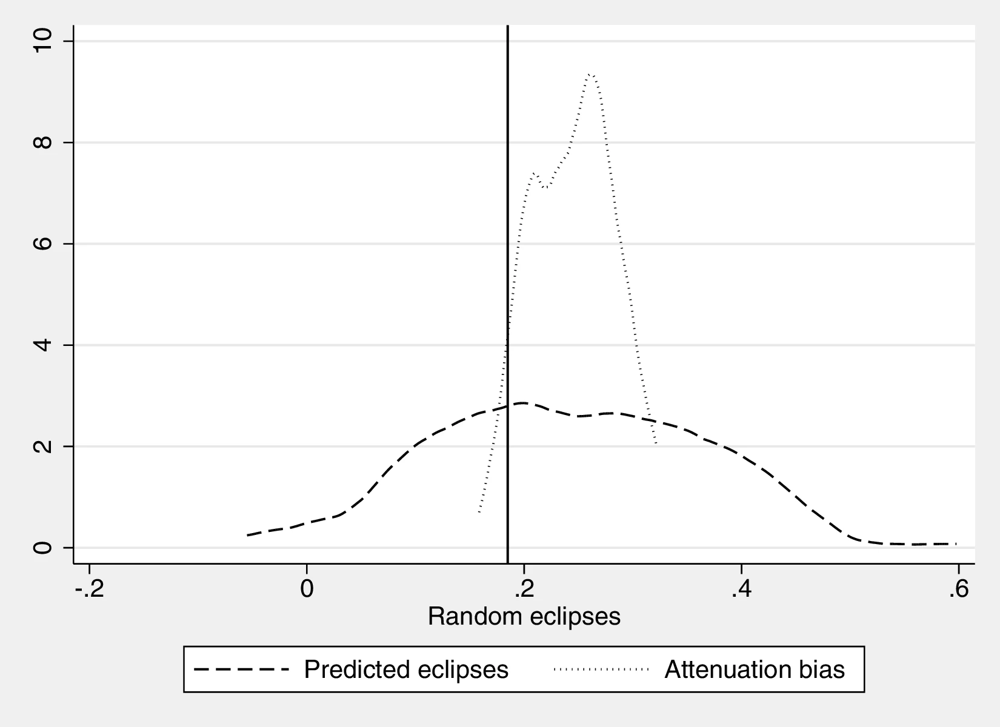
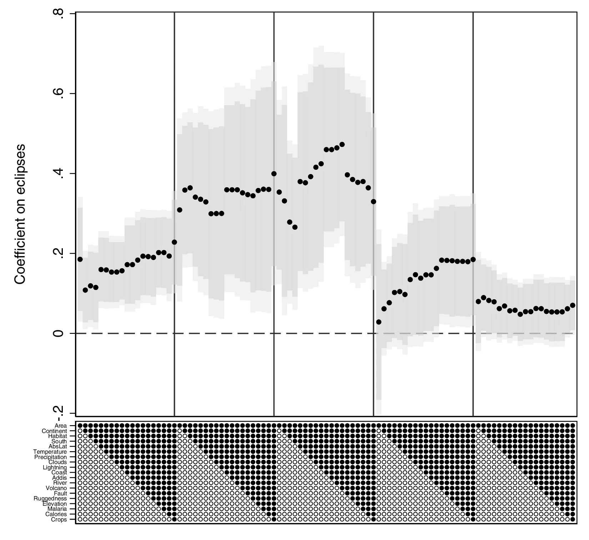
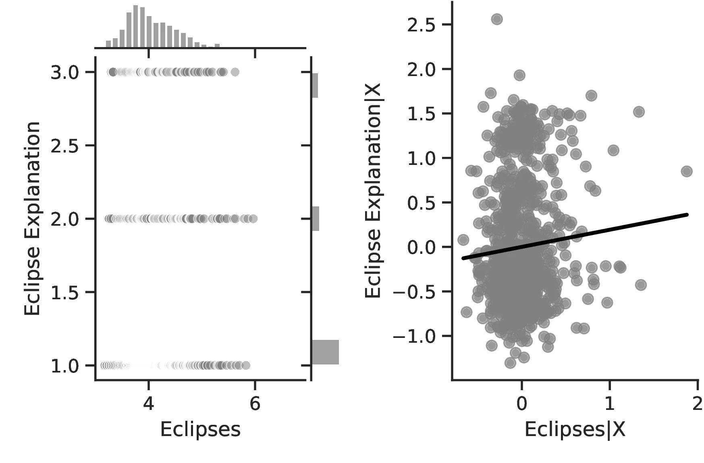
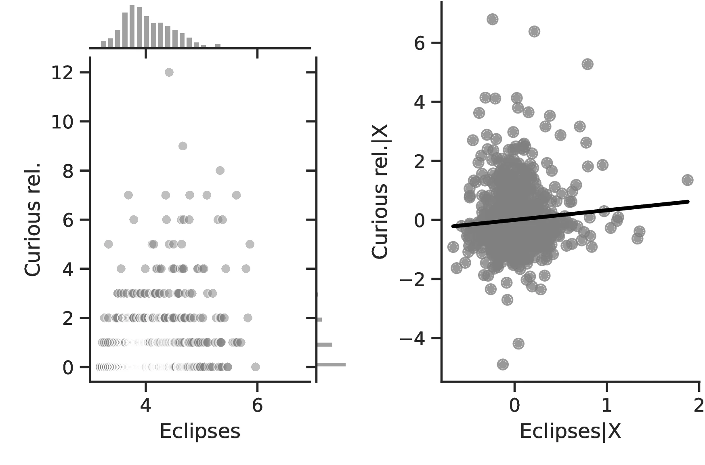
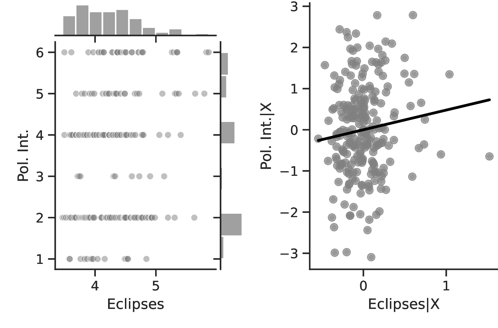
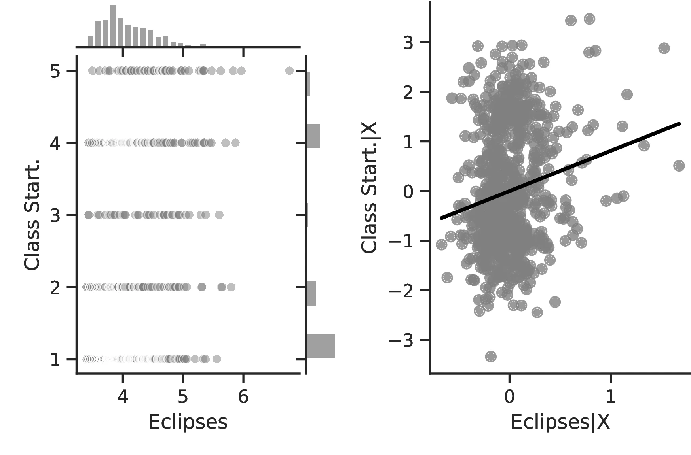
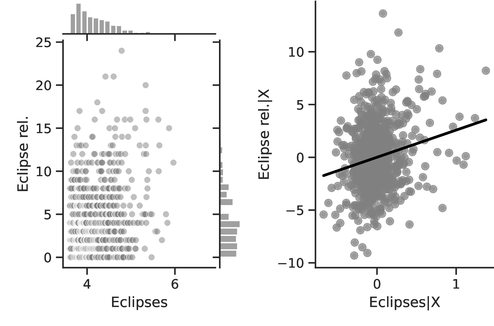

Solar Eclipses and the Origins of Critical Thinking and Complexity
![]()
This paper relates curiosity to economic development through its impact on human capital formation and technological advancement in pre-modern times. More specifically, we propose that exposure to inexplicable phenomena prompts curiosity and thinking in an attempt to comprehend these mysteries, thus raising human capital and technology, and, ultimately, fostering growth. We focus on solar eclipses as one particular trigger of curiosity and empirically establish a robust relationship between their number and several proxies of economic prosperity. We also offer evidence compatible with the human capital and technological increases we postulate, finding a more intricate thinking process and more developed technology among societies more exposed to solar eclipses. Among other factors, we study the development of written language, the playing of strategy games and the accuracy of folkloric explanations for eclipses, as well as the number of tasks undertaken in a society, their relative complexity and broad technological indicators. Lastly, we document rising curiosity both at the social and individual levels: societies incorporate more terms related to curiosity and eclipses in their folklore, and people who observed a total solar eclipse during their childhood were more likely to have entered a scientific occupation.
Eclipses, Human capital, Development, Curiosity
Acknowledgements
This paper was previously circulated under the title “The Terror of History: Solar Eclipses and the Origins of Critical Thinking and Complexity”. The authors want to express their gratitude to Felipe Valencia Caicedo, James Fenske, Per Fredriksson, Gunes Gokmen, Satyendra Gupta, Sara Lazzaroni, Jordan Loper, Naci Mocan, Ola Olsson, Gerhard Thowes and Gautam Tripathi for their useful comments and suggestions. Also, this paper has benefited from the interactions with during the ASREC 2019 European meeting, the VfS 2020 Annual Conference and the 2020 meeting of the Danish Society for Economic and Social History. This work was supported by the Agence Nationale de la Recherche of the French government through the program Investissements d’avenir ANR-10-LABX-14-01”.
1 Introduction
Scientific progress and (high-end) human capital are widely considered important contributors to economic growth, both theoretically and empirically (Mokyr 2005; Squicciarini and Voigtländer 2015).1 However, the deep-rooted determinants of critical thinking, science and, ultimately, human-capital creation are not well understood. This paper proposes curiosity as a natural precursor to human capital. Motivated by Adam Smith’s (1822) idea that ‘[w]onder [...] is the first principle which prompts mankind to the study [...]’, we examine whether curiosity motivates critical thinking, improving human capital and technology. Moreover, because curiosity is ‘an essential human trait without which no historical theory of useful knowledge makes sense’ Mokyr (2004, 15–16), curiosity can be seen as one root cause of economic prosperity, complementing other channels proposed in the literature.
Curiosity is acknowledged as a driver of knowledge in a diverse range of scientific fields. Described by the (philosopher and psychologist) William James as ‘the impulse towards better cognition’ (James (1983)), it is widely argued to be an integral stage of human development (Hall and Smith 1903; Daniel E. Berlyne 1978; Dember and Earl 1957; Kinney and Kagan 1976; Sokolov 1963).2 Jean Piaget argued that the purpose of curiosity was to ‘construct knowledge’ through interactions with the world (Piaget 2013).3 Curiosity associated with the acquisition of knowledge (epistemic curiosity Daniel Ellis Berlyne 1954) is predominantly encountered in humans, where it can be driven either by extrinsic stimuli or intrinsic motives (Loewenstein 1994; Oudeyer and Kaplan 2009; Butler 1953). Focusing on externally driven curiosity, history has given us numerous examples.4
This paper relates curiosity to economic development through its impact on human capital formation and technological advancement in pre-modern times. Curiosity measures are elusive—especially for pre-modern societies. To circumvent this limitation, we focus on triggers of human curiosity, and in particular, on natural phenomena. Natural events are good candidates with which to approximate curiosity —humans have always sought to comprehend the world around them. Thus, we argue that pre-modern societies more exposed to inexplicable natural phenomena gained a comparative advantage in critical thinking as people attempted to rationalise mysteries. However, different types of events may have opposite effects on growth depending on their typology.5 For instance, earthquakes, volcanic eruptions and flooding combine an intellectual challenge with high economic costs.6
In this paper, we focus on total solar eclipses. Owing to their particular characteristics, these are one of the most impressive natural phenomena and can hardly go unnoticed: during a total solar eclipse, the Moon blocks sunlight, throwing parts of the Earth into the shadows and turning day into night.7 Because humans have always sought to understand the revolving skies (Iwaniszewski 2014, 288), and with sunlight being essential for life, for pre-modern societies the disappearance of the Sun from the sky was a mystery worth unravelling. In this sense, solar eclipses represented a particularly curiosity-spurring riddle (Barale 2014, 1763–66)8 that ‘render[ed] them [people] [...] more desirous to know [...]’ (Smith 1822, 21). Indeed, although eclipse forecasting was an elusive task—especially for solar eclipses–several people achieved surprising success, attesting to their intellectual efforts to comprehend them.910
In summary, we suggest that throughout history, people whose curiosity was excited by natural events more often exerted a higher mental effort to understand nature.11 Albeit slowly, continued cognitive efforts quickened thinking, paving the way to increased human capital and facilitating future discoveries and technological change. Thus, in light of the Unified Growth Theory, this accumulation of knowledge and, especially, the development of mental skills, can be seen as a latent variable that ultimately contributed to the (relative) take-off of pre-modern societies. A crucial aspect of this process is the harmless nature of solar eclipses.
To document and elucidate this relationship, we combine different datasets. Proceeding in stages, we first show the direct impact of total solar eclipses on economic development.12 We then investigate the core mechanism associating solar eclipses and human capital. We further document a more advanced technology in places where total solar eclipses are more prevalent. Lastly, we close the loop, confirming that solar eclipses stimulate curiosity. To lend additional credence to our results, we assess the scope of religion as an alternative channel, finding no supporting evidence relating curiosity to religion. A set of placebo tests also confine the impact of solar eclipses to curiosity.
Solar eclipses have already entered economics. Severgnini and Boerner (2019) and Boerner, Rubin, and Severgnini (2021) leverage them as an instrument to study the adoption of mechanical clocks in medieval Europe, while Miao, Ponticelli, and Shao (2021) relate solar eclipses to social unrest in Imperial China. However, our interest lies in the cognitive challenge of rationalising the unknown and how devoting mental resources to this task may increase human capital, a topic not explored in the literature. In doing so, our paper relates to research explaining human capital accumulation in pre-modern times. There is ample evidence regarding religion (Becker and Woessmann 2009; Valencia Caicedo 2018; Waldinger 2017), the early introduction of the printing press (Baten and Zanden 2008) and institutional factors (Galor, Moav, and Vollrath 2009; Bobonis and Morrow 2014). Nevertheless, we focus on a crucial prior stage: cognisance and human capital shaped early in history by natural events.
This paper is also related to the literature that analyses the effects of natural events on social organisation. Cavallo et al. (2013) show that natural disasters promote political revolutions, thereby affecting growth. Belloc, Drago, and Galbiati (2016) and Bentzen (2019) focus on earthquakes, finding a slowdown in the transition from autocracy to self-governance in medieval Italy and an increase in religiosity, respectively. In analysing the effects of solar eclipses, which are harmless phenomena, we depart from this literature. The distinction is important as we are interested in human curiosity: destructive events may divert the interest of thinkers away from explaining a phenomenon towards the more urgent task of reconstruction, or they may kill them. Similarly, physical capital losses could retard economic growth, eroding the need for more complex social organisation.
Lastly, this study also contributes to research on the long-run determinants of growth, with a novel focus on human capital and technology. From a theoretical perspective, Galor and Moav (2002) propose that heritable human traits that afford a higher income provided an evolutionary advantage. This is the case, for instance, with innovativeness (Galor and Michalopoulos 2012). Empirically, there is sound evidence relating human capital to growth in pre-modern times (Squicciarini and Voigtländer 2015; Mokyr 2018; Chen, Kung, and Ma 2020). However, the deep-rooted determinants of human capital are still undocumented. With regard to technology adoption, Galor and Özak (2016) establish time preference to be a root cause, and Özak (2018) further investigates incentives to innovate. The relative lack of evidence connecting technology and human capital to economic growth stands in stark contrast to the wealth of evidence documenting alternative deep-rooted factors of development, notably agriculture, geography and climate (Ashraf and Galor 2011, 2013; Alsan 2015; Cervellati, Chiovelli, and Esposito 2019; Dalgaard, Knudsen, and Selaya 2015).13 Our paper bridges the gap in the previous literature, connecting human capital and economic growth in the very long run.
The remainder of the paper is organised as follows. Section 2 presents the data we use to substantiate our working hypothesis and the empirical strategy. Benchmark results are reported in Section 3, and a series of robustness tests follow in Section 4. Section 5 offers some concluding remarks. A series of appendices present the conceptual framework and the associated theoretical model, as well as additional results.
2 Data and empirical strategy
This paper combines multiple datasets to study the role of curiosity in economic development, and its driving factors. Although none of the data is perfect, we source information on the same topic from different origins to increase our confidence in the findings. The next paragraphs introduce the datasets we use, and Table 20 in the Appendix presents summary statistics for the most relevant variables.
2.1 Ethnic level data
The most prominent compilation regarding the living modes of ethnic groups is George Peter Murdock (1967)’s Ethnographic Atlas. This work samples more than one thousand ethnicities scattered around the globe and contains details about subsistence, marital practices and labour division. The observation date varies depending on data availability, though most groups are observed during the 20th century. An important aspect that differentiates the Ethnographic Atlas (and related data) from other databases we employ is its cross-sectional nature. We rely on Fenske (2014) to establish ethnic homeland boundaries.
Main variables. From this corpus of information, we retrieve several indicators attesting to economic development, human capital and technology. Since we focus on pre-modern societies still in the Malthusian regime, the most appropriate measure of economic prosperity is Population Density (Ashraf and Galor 2011). The Atlas captures this information using an increasing scale with eight levels denoting the mean size of local communities, which ranges from fewer than 50 people to cities with more than 50,000 inhabitants.14 A second indicator that is used in the literature is Settlement Patterns (Michalopoulos and Papaioannou 2013). Although it is not as widely used as population density, it aptly captures development by indicating the most prevalent type of settlement pattern for an ethnic group. This is also a categorical variable with eight levels, from nomadic groups to complex settlements of towns and associated hamlets.
Next, we introduce a set of more distant proxies of economic growth based on Diamond (1997)’s observation that as societies become economically successful, organisational complexity tends to increase. Three variables conveying this information can be found in the Atlas. The first captures jurisdictional hierarchy, with higher values denoting a more complex social organisation: acephalous societies, petty chiefdoms, larger chiefdoms, states and large states. Class stratification also attests to social complexity. In this case, one can observe no differences between individuals, wealth distinctions, elite stratification, dual stratification and more complex class systems. The third and final variable documents political integration and offers information about relationships and integration with neighbouring communities. It comprises six categories, indicating no higher authority than a family head, autonomous local communities, peace groups encompassing multiple groups, minimal states, little states and states.15
Focusing on economic development, this paper proposes human capital and technology as mechanisms through which curiosity could materialise as growth. Verifying this possibility requires information on the former, and the Ethnographic Atlas provides a coarse indicator in this sense. Relying on Zern (1979) and Spitz (1978)’s suggestion that strategic behaviour is indicative of advanced cognitive skills, we create a dummy variable attesting to strategy games being played at the ethnic level, in opposition to the playing of games of luck or strength. We argue that among societies where strategic thinking is more relevant, the playing of such games teaches the youth how to operationalise it. To document technological progress, we take advantage of a set of variables investigating gendered specialisation in several activities, counting the number of tasks undertaken.16 However, the set of surveyed activities changes from one group to another, and regressions must account for this fact.
We also leverage additional information linked to the original Ethnographic Atlas. The first is an accompanying dataset, the Standard Cross-Cultural Sample (George P. Murdock and White 1969), which expands the number of surveyed items but drastically reduces the number of observations.17 From this, we retrieve information on the advancement of writing, to approximate human capital. Similarly to the playing of games of strategy, we cast the original variable as a dummy indicator asserting the presence of written language. We also incorporate into our analysis a proxy for technological sophistication compiled by Eff and Maiti (2013). This is based on the notion that activities form a connected hierarchical network and, thus, activities in upper levels indicate a more advanced technology. For instance, dairy production is only possible once milking has been mastered, which in turn requires the herding of large animals. Thus, a society that only herds large animals scores lower than a society that produces dairy products.18
Lastly, Michalopoulos and Xue (2021) expand the Atlas by supplementing it with two types of information on folklore. The first indicates which of the major storytelling archetypes is featured in the local folklore. Among these, several categories are concerned with eclipses and possible causes, which we classify according to the degree of comprehension they indicate. Thus, folktales may show (a) no understanding, if no myths touch upon an archetype related to eclipses; (b) a naive understanding, if the folkloric explanation of eclipses is fanciful, or (c) a good understanding, when myths indicate that eclipses result from an interaction between the Sun and the Moon.19 We expect more elaborate interpretations the more total solar eclipses are spotted by society. The second type of data Michalopoulos and Xue (2021) compile is the frequency of certain concepts appearing in folktales.20
Based on the argument that curiosity begets thinking, we explore the relationship between solar eclipses and the number of thinking-related concepts appearing in the folklore. Secondly, we propose that a more careful observation of the skies reveals patterns that form the basis of calendars. Considering the computations involved in the creation of a regular calendar, we consider its existence as demonstrating human capital.21 Thus, we track the occurrence of a calendar to gauge the importance of calendars and attest to their use.22 A pivotal element in our argument is the hypothesis that eclipses provoke curiosity. Therefore, we focus on the occurrence of concepts related to the terms eclipse and curious. The first suggests that the event is relevant enough to be worth talking about it. In contrast, the second concept explores a direct consequence, that is, if eclipses spur curiosity, societies observing more eclipses should be more inquisitive, and this should be reflected in folktales.
Other data. The main analysis links eclipses and development. Despite the logical connection we propose, other factors may be in operation, including religion. Thus, it is possible that increasing numbers of unfamiliar events may lead to rising religiosity if individuals ascribe them to deities or, alternatively, establish a religious system to rationalise them. In this sense, Bentzen (2019) relates more frequent earthquakes to religiosity, and although eclipses are harmless, both events are uncanny. However, the exact impact of religion on development is unclear: Squicciarini (2020) documents lower human capital among the most religious people, while Norenzayan (2013) argues that high gods facilitate cooperation. Thus, we focus on the possible relationship between solar eclipses and religion. First, we analyse high-god complexity using data from the Ethnographic Atlas, which categorises groups according to the following criteria: high gods do not exist; they exist but are inactive in human affairs; they are active in human affairs but do not support morality; or they are supportive of human morality. Additionally, we select three concepts linked to religion: religion, religiosity and pray.
Finally, we seek to demonstrate that our findings are not incidental. We therefore consider a set of concepts unrelated to economic development, human capital and technology: meteorological phenomena, namely cloud and lightning,23 the inanimate concepts of Sand and Rock; and thirdly, the colours White and Purple.24
2.1.1 Empirical strategy
The Ethnographic Atlas and related works are cross-sectional and demand an extensive set of controls to isolate from confounders the effect on curiosity we are investigating. For each of the different outcomes, we estimate the following regression: \[ Y_{i}=f\left(\alpha_{1}E_{i}+\gamma_{1}\mathbf{I}_{i}+\delta_{i}+\varepsilon_{i}\right), \tag{1}\]
where \(Y_{i}\) is an outcome observed for ethnic group \(i,\) \(E_{i}\) denotes the number of eclipses visible from within the homeland boundaries of ethnicity \(i\), and \(\mathbf{I}_{i}\) is a vector of covariates. Regressions feature continent fixed effects captured by \(\delta_{i}\). Depending on the dependent variable, we estimate Equation 1 using OLS, a probit model, or an ordered probit model and cluster the standard errors at the regional level.25
The set of covariates \(I_{i}\) features geographic controls including average temperature, precipitation and cloud coverage, factors that can affect the visibility of the phenomenon,26 as well as distance to the coast and to waterways, to account for their effect in promoting state creation (Mann 2012); distance to the closest volcano and fault line, to approximate exposure to destructive natural events;27 Terrestrial distance to Addis Ababa (Ashraf and Galor 2013), which approximates genetic diversity and its impact on growth; terrain ruggedness and elevation, which proxies trust levels and isolation (Nunn and Puga 2012); malaria prevalence, which has long-run implications for social and economic outcomes (Diamond 1997); the potential caloric yield of the soil, which is associated with important cultural traits (Galor and Özak 2016); absolute latitude and an indicator for the southern hemisphere;28 and indicators for the major habitat type and the major crop type at the ethnic-group level.29 We also account for homeland size using decile indicators to tackle the mechanic relationship between area and the number of eclipses, and also because this may contribute to the development of state capacity.30
Lastly, we employ a Poisson model to estimate the number of tales about a certain topic in ethnic folklore. Here, we follow Michalopoulos and Xue (2021) and expand the set of controls with the inclusion of the logarithm of the number of bibliographic elements consulted and the year of first publication, to which we add the (log) number of tales present in the folklore. These controls capture the fact that—for various reasons—some societies developed a more extensive set of stories or were more thoroughly surveyed by folklorists. For each topic, the original construction of the dataset considers a series of related words as synonyms.31 In general, this strategy is sound, but in our particular case these additional words were unrelated to the outcome of interest. Thus, regressions control for synonyms to expunge any potential bias.32
2.2 Panel data
Despite our extensive set of controls, the cross-sectional nature of the ethnographic data means we cannot assuage all concerns related to omitted variables. Thus, we complement it with two data sources that can be arranged into a panel structure: the Seshat database and Ashraf and Galor (2011).
The Seshat database compiles details regarding the cultures of people who inhabited some selected regions, with a focus on military aspects.33 Unfortunately, little information about the geographical boundaries of the different polities is provided; we have thus manually digitised several maps to attribute to each polity the eclipses visible from its territory in a given time period.
Miranda and Freeman (2020) transform the original dataset and provide an unbalanced panel structure in which observations are at the polity-century level, interpolating the data as necessary. However, the original polity indicators only allow for a very short time dimension, which, coupled with the steady pace of social transformation, severely limits identification. To rectify this problem, we determined each polity’s most-removed predecessor and use it as fixed effect. For instance, the short-lived Kidarite Kingdom (lasting two centuries) is traced back to the Parthian Empire.34 The inclusion of polity and time fixed effects subsumes the time-invariant characteristics of polities and corrects for the natural evolution of social change.35 Some variables included in Seshat have an exact counterpart in the Ethnographic Atlas, and we use these in a robustness exercise. These include information on Population Density, Administrative Levels, Jurisdictional Hierarchy and Writing. However, due to interpolation, these variables are continuous rather than categorical. In addition, Seshat offers a series of additional variables that enable both human capital and technology to be examined from different perspectives. In particular, regarding human capital indicators, it is possible to ascertain the development of a Calendar and the different Text typologies in use. The first variable is directly connected to the previously outlined argument relating solar eclipses and time measurement. The second qualifies the information about writing, indicating whether texts deal only with worldly subjects or reflect strong imaginative capabilities.36 Lastly, and owing to the intimate relationship between eclipses and Geometry, we include the development of the latter as an additional measure of human capital. Technological indicators include the type of Money in use and a categorisation of major Infrastructure.37
Overall, the Seshat database complements the Ethnographic Atlas, offering valuable information for studying human social evolution. However, the results from the Seshat should be interpreted with caution and used as a robustness exercise to re-validate the findings from the Ethnographic Atlas. Several factors limit the identification of causal effects in the Seshat, including the interpolation of the original data, the slow pace of social change, and the possibility that fixed effects may absorb a large part of the variation therein. Thus, results from the Seshat should be interpreted as a robustness exercise to complement the findings from the Ethnographic Atlas, rather than as definitive evidence.
To better validate our findings, we complement our analysis using other sources that also have a panel dimension. First, Ashraf and Galor (2011) provide several direct measures of technological level for the years zero and 1000 in areas corresponding to today’s national borders. These measures focus on various aspects and include two technological aggregates—a global one and a non-agricultural one—as well as indicators of technological sophistication in communications, industry and transportation. We transform the data to take advantage of their underlying panel structure. This minimises problems stemming from omitted variables and unobservable intrinsic characteristics. Second, Section 2.3 introduces individual-level data, with a large host of country and century fixed-effects.
2.2.1 Empirical strategy
Our empirical strategy for these two data sources accounts for their panel structure by including fixed effects at the relevant levels. Overall, we estimate Seshat’s outcomes using an OLS model, while technology levels follow a censored linear model to account for their relatively narrow ranges and the data’s clearly defined limits.
The main specification using Seshat includes a set of controls similar to that used with the Ethnographic Atlas, comprising potential calories, elevation, ruggedness, malaria, cloud coverage, lightning intensity and area-decile fixed effects.38 To these, we add fixed-effects capturing political continuity or change between periods, the relationship with supra-national entities and the polity’s peak century. Furthermore, because Seshat presents data every century, we can also include controls for volcanic Eruptions.39 Additionally, regressions using the Seshat data need to account for the dynamic nature of the panel. Thus, we follow Turchin (2018) and introduce one-period lagged values of each outcome we estimate as a regressor. These controls consider the possibility of (delayed) interrelations between the different proxies of development—for instance, that mastering geometrical measurements facilitates the subsequent creation of a calendar. Moreover, regressions consider potential spillover effects from neighbouring polities by including a distance-weighted average (with an exponential decay) of contemporaneous values for all outcomes. The econometric specification is \[ Y_{i,t} =\beta^E E_{i,t} + \beta^V V_{i,t} + \mathbf{X}_{i,t}\Gamma + \sum_{y\neq Y \in \mathcal{Y}} \beta^y y_{i,t-1} + \sum_{y \in \mathcal{Y}} \gamma^y y_{-i,t} + \delta_i + \kappa_t + \epsilon_{i,t}. \tag{2}\]
As before, \(Y_{i,t}\) denotes the outcome of interest we observe for polity \(i\) at time \(t\), while \(\mathcal{Y}\) represents the set of outcomes. \(E_{i,t}\) and \(V_{i,t}\) denote the number of total solar eclipses and volcano eruptions that occurred within polity \(i\) at time \(t\), and \(\mathbf{X}_{i,t}\) represents the controls discussed above. \(\delta_i\) and \(\kappa_t\) are polity and time fixed effects, the term \(\sum_{y\in\mathcal{Y}}\gamma^y y_{-i,t}\) indicates the distance-weighted neighbours’ externality and \(\epsilon_{i,t}\) is the error term. For the Seshat data, we compute two types of standard error: clustered at the polity level and considering time and spatial correlation (1000 years and 5000 km, respectively).40
A similar specification emerges in the case of technological data. However, because only two periods of time are available, the dynamic part of the estimation is not necessary. Hence, we estimate a very simple censored model with country and time fixed effects, namely, \[ Y_{i,t} =f\left(\beta^E E_{i,t} + \beta^V V_{i,t} + \delta_i + \kappa_t + \epsilon_{i,t}\right). \tag{3}\]
2.3 Individual data
The use of aggregate data to approximate curiosity may be perceived as problematic insofar as it does not document individuals’ reactions to inexplicable events. Thus, we collected individual-level data from the Wikidata project to infer whether a person becomes more interested in knowing about the world following an eclipse.41 Wikidata is a free and open knowledge base that contains structured data on various topics, including people, places, events, and media. It is derived from selected sections of Wikipedia articles and other sources and is regularly updated. To collect the data for our study, we used a query on the Wikidata SPARQL endpoint, which is a standardised query language for accessing and manipulating data stored in Wikidata. Our query focused on individuals born between 1600 BCE and 1800 CE who had information available on their birth date, birthplace, and occupation. We limited the time frame to 1600 BCE because all variables were only available for a small number of individuals born before that time.42 The resulting database lists all individuals for whom no data is missing and includes, for each person, their birth date, birthplace coordinates, and all occupations in which they were active. To provide an example of how we used individual-level data from Wikidata in our study, we will introduce Johannes Browallius, a person born in Sweden in 1707 who is included in our database. As Wikidata is not commonly used in economics research, using a specific example can help illustrate the process and results of our study in more detail.
Using the data from Wikidata, we classify individuals as being active in a Scientific or Religious occupation and relate occupation choices to the observation of a total solar eclipse during childhood. First, because individuals tend to be active in multiple fields, our classification scheme considers a person active in science or religion if at least one of the listed occupations can be classified as such. To do this, we first identified the categories within the Wikidata’s ontology that correspond to scientific and religious occupations. For example, the category for scientific occupations include geologists, physicists, zoologists, and astronomers, while the category for religious occupations features monks, deacons, rabbis, and imams. Next, for each individual, we examined their listed occupations and determined whether any of them fell within the scientific or religious categories. If at least one of their occupations was classified as Scientific or Religious, we considered the individual to be active in that field. Following with Johannes Browallius, he is listed as having worked as physicist, biologist, priest, theologian, botanist, university teacher and translator. In the final database, we classify him as having occupations in both, i.e., in science and religion.
According to our hypothesis that inexplicable events, such as solar eclipses, can increase curiosity, we expected that individuals who were exposed to solar eclipses during childhood would be more likely to pursue careers in science. This is because scientific occupations involve inquiring about the workings of the world and require a curious mindset. In contrast, religious occupations are not embedded with this inquisitorial dimension, and experiencing an eclipse should not alter the probability with which these occupations are entered. Thus, for each individual we create a dummy variable stating whether or not a total solar eclipse was visible from her birthplace city between the ages of 5 and 15. To determine local eclipse visibility, we compared the paths of totality of eclipses to the coordinates of each individual’s birthplace and only considered the eclipses that occurred during the relevant dates for each individual. This procedure assumes that individuals did not migrate far from their place of birth, as the visibility of solar eclipses extends about 100 km to the north and south of the path of totality. Johannes Browallius was born in Västrås, Sweden, which was within the path of totality of the total solar eclipse that took place on May 3, 1715, when he was eight years old.
In addition to creating a dummy variable for solar eclipses, we also created a similar variable for volcanic eruptions to gather information on another potential source of curiosity. Because cities are often located some distance from volcanoes, we accounted for the fact that volcanic effects such as ash falls and smoke columns can be observed up to 100 km away. Therefore, we considered an individual to have been exposed to a volcanic eruption if their birthplace city was within 100 km of a volcano that experienced an eruption during their childhood.
2.3.1 Empirical strategy
We model occupation as a linear probability model: \[ O_{i,j(i),t(i)} = \beta + \beta^E E_{i,j(i),t(i)} + \beta^V V_{i,j(i),t(i)} + \gamma_{j(i)} + \kappa_{t(i)} + \epsilon_{i,j(i),t(i)}, \tag{4}\]
where \(O_{i,j(i),t(i)}\) is a dummy variable indicating that individual \(i\) born in country \(j(i)\) during century \(t(i)\) entered a scientific (or religious) occupation. As before, \(E_{I,j(i),t(i)}\) and \(V_{i,j(i),t(i)}\) denote eclipses and volcanic eruptions, respectively. To isolate the effect operating through curiosity stemming from global changes regarding the importance of science and local factors influencing the pursuit of discoveries, regressions include time \(t(i)\) and location (at the country level) \(j(i)\) fixed effects. We cluster standard errors at the country-century level. However, the sample size greatly varies over time, with only a handful of observations for the first periods and many more as time advances. If eclipses became less important in determining curiosity in more recent times, unweighted regressions would disproportionately over-represent the more recent cohorts and bias the results towards the current effect of eclipses on curiosity. Thus, we estimate a weighted version of Equation 4 to circumvent this problem. In doing so, we attribute to each individual an equal probability of being in the sample, regardless of their century of birth. We present the results with two alternative sets of weights. The first is data-driven and attributes to individual \(i\) born in century \(t(i)\) a sampling probability equal to the inverse of the percentage that individuals born in century \(t(i)\) have in the sample. The second approach considers estimates of centennial total world population to construct the weights.
2.4 Eclipses
The most comprehensive eclipse catalogue is Espenak and Meeus (2006)’s “Five Millennium Catalogue of Solar Eclipses: –1999 to +3000”. This almanac provides the ephemeris corresponding to all eclipses occurring between –1999 and +3000, indicating their key attributes. Jubier (2019b) uses this reference to elaborate detailed maps representing the path of totality of each eclipse—that is, the set of locations from which the Sun is completely overshadowed by the Moon.43 A path of totality covers a narrow strip of land no more than 160 kilometres wide that moves eastward at about 3600 km/h, resulting in solar eclipses being visible from many longitudes but only from a restricted number of latitudes. We limit the time coverage to the interval of 2000 BCE–1500 CE.44 Figure 7 in Section 7 depicts some selected paths of totality, illustrating that for a given eclipse, local visibility varies.
Our data show that a total of 5635 total and annular solar eclipses occurred in the 3500 years considered, with an average of 1.61 per year. However, it is necessary to consider that a solar eclipse is only visible from certain points on the globe, and therefore, the frequency with which they occur at a given location decreases rapidly as precision increases. Thus, if we consider 100 km \(\times\) 100 km cells,45 solar eclipse frequency is reduced to only 1.17 solar eclipses per century. At the city level, Steel (2001, 31) reports an average inter-eclipse span of 410 years. Considering these characteristics, at a given location total solar eclipses are an almost random variable, albeit they are slightly more likely in the northern hemisphere. To construct our main variable of interest—the number of total solar eclipses observable from an area—we intersect the relevant boundaries with paths of totality. In the cases for which a time dimension is relevant (for instance, people listed in Wikidata), we restrict the eclipses to those occurring during the timeframe we consider. Figure 1 indicates the number of eclipses visible from within ethnic homeland boundaries.46
Notes: This figure plots the number of total solar eclipses at the ethnic-group level
3 Results
This section analyses the empirical relationship between total solar eclipses and the proxies of development, human capital and technology discussed above. For convenience, we group the results according to the type of outcome. Thus, we first discuss the results pertaining to economic development and then assess the plausibility of human capital and technology as driving mechanisms. We finish by presenting the results concerning curiosity.
3.1 Economic development
Table Table 1 combines results using the Ethnographic Atlas and Seshat to portray a coherent assessment of the relationship between the number of total solar eclipses (measured in logarithms) and the various proxies of economic development. Because the Atlas reports these variables as categorical information, we estimate an ordered probit model. Columns 1–3 and 4–6 focus on Population Density and Settlement Patterns, using information from the Ethnographic Atlas. The main difference between specifications is the addition of covariates. Thus, Columns 1 and 4 present the raw correlation between variables, partialling out only the effect of continents. Columns 2 and 5 introduce a rich set of geographical confounders and, finally, Columns 3 and 6 incorporate information about the major crop types cultivated. The econometric specification follows Equation 1.
In contrast, Columns 7–8 use data from the Seshat and exploit its underlying panel structure. In these Columns, the outcomes are continuous and we estimate the effect of solar eclipses on these using OLS. Column 7 takes polity identifiers directly from the Seshat database, while Column 8 uses the most-removed predecessor of a polity.
| Ethnographic Atlas | Seshat | |||||||
| Population Density | Settlement Patterns | Population Density | ||||||
| (1) | (2) | (3) | (4) | (5) | (6) | (7) | (8) | |
| Solar ec. (log) | 0.217 | 0.582 | 0.682 | -0.292 | 0.576 | 0.720 | 0.037 | 0.116 |
| (0.147) | (0.235)** | (0.206)*** | (0.166)* | (0.142)*** | (0.124)*** | (0.077) | (0.105) | |
| [0.071] | [0.096] | |||||||
| Dist. volc. (log-km) | -0.081 | -0.073 | -0.041 | -0.051 | ||||
| (0.058) | (0.056) | (0.057) | (0.058) | |||||
| Dist. fault (log-km) | 0.120 | 0.121 | -0.056 | -0.081 | ||||
| (0.034)*** | (0.038)*** | (0.024)** | (0.040)** | |||||
| Volc. eruptions (log) | 0.022 | 0.021 | ||||||
| (0.014) | (0.012)* | |||||||
| [0.011]* | [0.010]** | |||||||
| Fixed effects | Continent | Continent | Continent | Continent | Continent | Continent | Polity | Polity |
| Time Fixed Effects | No | No | No | No | No | No | Yes | Yes |
| Geography | No | Yes | Yes | No | Yes | Yes | Yes | Yes |
| Ethnic | No | No | Yes | No | No | Yes | No | No |
| Controls Seshat | No | No | No | No | No | No | Yes | Yes |
| \(R^{2}\)/Pseudo-\(R^{2}\) | 0.074 | 0.157 | 0.196 | 0.067 | 0.148 | 0.195 | 0.994 | 0.911 |
| Observations | 568 | 466 | 466 | 1133 | 932 | 932 | 233 | 448 |
Notes: This table presents the results of ordered probit regressions relating the impact of eclipses on economic development at the ethnic-group level in Columns 1–6. Columns 1–3 report the findings for Population density, while Columns 3–6 focus on Settlement patterns. Columns 7–8 estimate the effect of solar eclipses on Population density using the Seshat data and OLS. Column 7 uses Seshat’s polity identifiers, and Column 8 employs the most-removed predecessor polity identifier.
The coefficient relating solar eclipses to population density in Column 1 is positive but not significant. However, after correcting for geographic determinants of economic growth in Column 2, it becomes larger in magnitude and highly significant. Furthermore, including arguably exogenous ethnic-level indicators in Column 3 only reinforces the previous findings, increasing the coefficient to \(0.68\) and reducing its standard error.
To gauge the impact of solar eclipses on development, we turn to their average marginal effects, noting that magnitudes are both statistically and economically relevant. More specifically, ethnic groups are more likely to have a headcount above 200 individuals as the number of eclipses increases. The effect is especially strong for the highest level of population density: indigenous cities of more than 50,000 people show an increase of \(7.92\)% in population density when the number of total solar eclipses increases by one percentage point. In the sample, only \(10.52\)% of societies are in that category.47 An alternative method to assess the size of the effects consists in comparing the most likely level of population density for ethnic groups while arbitrarily fixing the number of eclipses. For instance, when fixing these at the level of 10th centile, the predicted population density is at its lowest level. However, raising the number of solar eclipses to the level corresponding to the 90th centile drastically changes the prediction: now, population density is likely to correspond to the top category.48
Figure 2 graphically represents the results for solar eclipses.49 The left panel displays the raw correlation between variables (with no controls), while the right panel corresponds to Column 3. In general, the few outliers do not seem to be driving the regression.
Notes: The left panel of Figure 2 (Figure 2 (a)) displays the raw correlation between the number of solar eclipses (in logarithm) and Population density. The right panel illustrates the remaining correlation once we control for geographical and ethnic factors. The figure is a linear approximation of the underlying ordered probit regression in Table 1. Figure 2 (b) repeats the same procedure for Settlement patterns.
Employing Settlement Patterns to approximate economic development confirms the previous results, despite the correlation between variables being only \(0.54\). As before, the sequential addition of covariates between columns 3 and 6 boosts the coefficient associated with solar eclipses while decreasing its standard error, which displays a value of \(0.72\) under the most comprehensive specification (also see Figure 2 (b)). However, the corresponding marginal effects are less pronounced than before. For instance, observing complex settlements is \(3.73\)% more likely when the number of solar eclipses increases by one percentage point, a significant increase from the sample average of \(2.36\)%. Similarly, the category immediately below becomes \(17.17\) percentage points more probable,50 while the other categories show a decrease in probability. Smaller effects are also observed when we move ethnic groups along the distribution of solar eclipses. In this case, shifting from the 10th to the 90th centile does not affect the most likely category, which remains constant at level \(7\) out of eight. Instead, we note a dramatic increase in the associated probability, from around \(0.36\) to about \(0.53\).
Finally, columns 7 and 8 refer to the relationship between the number of total solar eclipses and population density in the Seshat data. However, in this instance we consider Population Density as a continuous variable. Overall, we obtain results broadly compatible with those discussed above, although the coefficient associated with solar eclipses are never significant. In this case, we estimate an elasticity of \(0.116\) between the variables. Comparing Columns 7 and 8, we note that the inclusion of a more complete set of polity fixed effects certainly improves the estimation, in part by allowing for a larger sample but also because the entire history of polities is better represented. Unfortunately, due to the different scales employed in Columns 1–6, it is not possible to compare the estimations across specifications. Overall, Table 1 provides empirical evidence of a relationship between solar eclipses and economic development, lending credence to our hypothesis.
In Table 2, we turn our attention to a set of alternative proxies of economic growth, which are all based on Diamond (1997). Columns 1–3 employ data from the Ethnographic Atlas, while Columns 4–7 refer to the Seshat database. In the interest of brevity, the former Columns only display the results when the largest set of covariates—including geographic and ethnic controls—is employed. Column 1 approximates growth using Jurisdictional Hierarchy, Column 2 focuses on different Class Stratification schemes, and Column 3 measures Political Integration as the dependent variable. In all cases, regressions follow Equation 1 and use an ordered probit model with standard errors clustered at the region level. Equivalent indicators exist in Seshat for two variables: Administrative Levels (akin to political integration) and Jurisdictional Hierarchy. Columns 4–5 and 6–7 present these, respectively, with Seshat’s polity indicators in even-numbered Columns and most-removed polity identifiers in the others.51
| Ethnographic Atlas | Seshat | ||||||
| Juris. Hier. | Class Strat. | Pol. Int. | Adm. Levels | Juris. Hier. | |||
| (1) | (2) | (3) | (4) | (5) | (6) | (7) | |
| Solar ec. (log) | 0.580 | 0.629 | 0.514 | 0.006 | 0.026 | 0.010 | 0.028 |
| (0.147)*** | (0.210)*** | (0.228)** | (0.012) | (0.019) | (0.021) | (0.012)** | |
| [0.008] | [0.012]** | [0.015] | [0.007]*** | ||||
| Dist. volc. (log-km) | 0.021 | -0.131 | 0.165 | ||||
| (0.053) | (0.048)*** | (0.060)*** | |||||
| Dist. fault (log-km) | -0.004 | 0.001 | -0.062 | ||||
| (0.048) | (0.048) | (0.082) | |||||
| Volc. eruptions (log) | 0.003 | -0.001 | 0.002 | 0.001 | |||
| (0.003) | (0.002) | (0.002) | (0.002) | ||||
| [0.002]* | [0.002] | [0.002] | [0.001] | ||||
| Fixed effects | Continent | Continent | Continent | Polity | Polity | Polity | Polity |
| Time Fixed Effects | No | No | No | Yes | Yes | Yes | Yes |
| Geography | Yes | Yes | Yes | Yes | Yes | Yes | Yes |
| Ethnic | Yes | Yes | Yes | No | No | No | No |
| Controls Seshat | No | No | No | Yes | Yes | Yes | Yes |
| \(R^{2}\)/Pseudo-\(R^{2}\) | 0.234 | 0.151 | 0.227 | 1.000 | 0.933 | 0.996 | 0.939 |
| Observations | 933 | 846 | 265 | 79 | 448 | 117 | 448 |
Notes: This table presents the results of ordered probit regressions relating the impact of eclipses on economic development, approximated by social complexity, at the ethnic-group level in Columns 1–3 and at the polity level in Columns 4–7. Column 1 reports the findings for Jurisdictional hierarchy, Column 2 focuses on Class stratification and Column 3 on Political integration. Columns 4–7 are estimated using an OLS model whereby the outcome of interest is Administrative levels in Columns 4–5 and Jurisdictional hierarchy in Columns 6–7. Columns 4 and 6 use Seshat’s polity identifiers and Columns 5 and 7 employ the most-removed predecessor polity identifier.
In general, the specifications in Table 2 confirm our previous results and illustrate an even stronger relationship between curiosity and development. The associated marginal effects reveal an overall significant increase in the probability that an ethnic group belongs to the top category, with values ranging between \(1.93\) and \(7.53\). Lastly, and as before, we observe limited changes when comparing the most likely level as we increase the number of solar eclipses from the 10th to the 90th centile: jurisdictional hierarchy is likely to advance from an acephalous society to a petty chiefdom, while class stratification remains at its lowest level and political integration at the second- lowest. Yet, for these, the probability of belonging to these rather lower echelons decreases significantly, from \(0.58\) to \(0.34\) and from \(0.46\) to \(0.33\), respectively.
Results using Seshat provide a very similar conclusion, namely, a positive and significant association between curiosity and development. This can be seen in Columns 5 and 7, where the coefficient associated with solar eclipses is significant and positive, while the corresponding one in Columns 4 and 6 is only positive. As discussed above, this may be the result of poorly designed polity indicators in the Seshat database.52
Lastly, in contrast to the strong association between solar eclipses and development, alternative triggers of curiosity provide us with conflicting results: distance to fault lines and volcanoes often change the sign of the result, which also tends to not be significant. The destruction inflicted by these is one possible explanation, as it imposes an economic burden on societies experiencing them that slows down the process of development.53
3.2 Human capital and technology
The main hypothesis of this work links curiosity and economic development through human capital and technological improvements. That is, as individuals exert a cognitive effort to understand solar eclipses, they become better at thinking and gain human capital, which allows for better technology. Furthermore, interest in eclipses can itself propel the development of new technologies. Table 3 and Table 4 present the results of our analysis of these aspects, focusing on the nexus between solar eclipses and human capital and solar eclipses and technology, respectively.
Table 3 combines three sources of information to portray a coherent relationship between solar eclipses and human capital. Columns 1 and 2 approximate human capital through the playing of Strategy Games and the development of Writing using information from the Ethnographic Atlas.54 For these outcomes, we estimate an econometric model based on Equation 1 using OLS, with the full set of controls discussed above and clustering standard errors at the region level.55 Columns 3–5 incorporate information derived from folktales (Michalopoulos and Xue 2021). To assess human capital levels, Column 3 focuses on Eclipse Explanations and Column 4 on the frequency with which concepts related to Calendars appear in tales. Column 5 provides a more straightforward approach, relating solar eclipses to the frequency with which words related to Thinking appear in myths.56 We estimate Columns 3–5 using a Poisson model.57 These regressions follow the same principles outlined above regarding controls and clustering, with the additional controls discussed previously.58 Lastly, Columns 6–9 use data from the Seshat database and focus on the development of Writing, Text typologies, Calendars and Geometrical Measurements, respectively. Throughout these specifications, we only employ the most-removed predecessor polity fixed effects and present standard errors clustered at the century level and accounting for temporal and spatial autocorrelation.
| Ethnographic Atlas | Folklore | Seshat | |||||||
| Strat. Games | Writing | Ec. Exp. | Cal. Rel. | Thinking Rel. | Writing | Texts | Calendar | Geom. Meas. | |
| (1) | (2) | (3) | (4) | (5) | (6) | (7) | (8) | (9) | |
| Solar ec. (log) | 0.228 | 0.400 | 0.330 | 0.185 | 0.070 | 0.010 | 0.010 | 0.016 | 0.018 |
| (0.062)*** | (0.134)*** | (0.113)*** | (0.085)** | (0.038)* | (0.018) | (0.008) | (0.006)** | (0.010)* | |
| [0.015] | [0.008] | [0.006]*** | [0.009]** | ||||||
| Dist. volc. (log-km) | -0.007 | 0.028 | -0.126 | -0.065 | 0.004 | ||||
| (0.023) | (0.039) | (0.076)* | (0.023)*** | (0.018) | |||||
| Dist. fault (log-km) | 0.004 | 0.006 | 0.206 | 0.009 | 0.043 | ||||
| (0.015) | (0.051) | (0.075)*** | (0.026) | (0.014)*** | |||||
| Volc. eruptions (log) | 0.000 | -0.000 | -0.001 | -0.002 | |||||
| (0.001) | (0.001) | (0.001) | (0.001) | ||||||
| [0.001] | [0.001] | [0.001] | [0.001]** | ||||||
| Fixed effects | Continent | Continent | Continent | Continent | Continent | Polity | Polity | Polity | Polity |
| Time Fixed Effects | No | No | No | No | No | Yes | Yes | Yes | Yes |
| Geography | Yes | Yes | Yes | Yes | Yes | Yes | Yes | Yes | Yes |
| Ethnic | Yes | Yes | Yes | Yes | Yes | No | No | No | No |
| Controls Seshat | No | No | No | No | No | Yes | Yes | Yes | Yes |
| \(R^{2}\)/Pseudo-\(R^{2}\) | 0.665 | 0.524 | 0.095 | 0.214 | 0.415 | 0.927 | 0.958 | 0.965 | 0.948 |
| Observations | 346 | 122 | 918 | 918 | 918 | 448 | 448 | 448 | 448 |
Notes: This table presents the results of regressions linking the impact of eclipses on human capital at the ethnic-group level in Columns 1–5 and at the polity level in Columns 6–9. Columns 1 reports the findings for the playing of Game of strategy while Column 2 focuses on Writing. Column 3 relates solar eclipses to Eclipse explanation as recorded in folklore. Columns 4 and 5 focus on the prevalence of words related to the concepts of Calendar and Think. Column 6 re-estimates the impact of solar eclipses on the development of Writing using data from Seshat, Column 7 focuses on Text typologies and Column 8 reviews their effect on the development and use of a Calendar while Column 9 focuses on Geometrical measurements. Columns 6–9 use the most-removed predecessor polity identifier. Columns 1, 2 and 6–9 are estimated by OLS, Column 3 follows an ordered probit model and Columns 4 and 5 a Poisson model. Columns using the folklore data include an additional regressor, as indicated in footnote 32.
The results are by and large coherent with our hypothesis and indicate a positive relationship between eclipses and human capital. More specifically, except for Column 6, in all specifications the coefficient associated with the number of solar eclipses is positive and significant. Thus, a one percent increase in the number of solar eclipses increases the probability of an ethnic group playing games of strategy or having developed a writing system by \(0.23\) and \(0.40\), respectively. Compared to the corresponding averages (\(0.21\) and \(0.21\)), the change in these probabilities has economic significance. However, similar specifications in Columns 6 and 7 using the Seshat only display positive but non-significant coefficients.59
Other measures of human capital similarly increase with the number of eclipses. Most notably, Column 3 indicates a better understanding of solar eclipses as the phenomenon becomes more prevalent. This is a relevant result that speaks directly to our theory. We posit that people devote mental resources to the understanding of eclipses. Thus, more refined theories closer to reality should ensue from more intense pondering. Column 3 indicates that this is indeed the case: a one-percent increase in the number of solar eclipses increases by \(7.26\)% the probability of having an elaborate explanation for the phenomenon. Similarly, if we boost the number of eclipses from the 10th to the 90th percentile of the distribution for all ethnic groups, on average, the probability of having no explanation for the phenomenon decreases from \(69\)% to \(56\)%.
Columns 4 and 8 indicate a greater abundance of words related to the concept of a Calendar in folktales and a more intense development of actual calendars among societies more exposed to eclipses.60 Related to the idea that eclipses stimulate curiosity and quicken thinking, Column 5 indicates a higher frequency of terms related to Thinking when the number of eclipses increases, with an associated marginal effect of \(0.24\) more tales on this topic for each additional eclipse. Lastly, Column 9 clearly indicates that geometry tends to develop more as solar eclipses increases, which is in line with the idea that geometry is a useful tool for predicting eclipses.
Table 4 presents our results regarding how solar eclipses contribute to technological development.61 Column 1 measures technological sophistication by counting the number of Tasks listed in the Ethnographic Atlas, which we estimate using a negative binomial regression.62 Column 2 refines this crude measure using data from Eff and Maiti (2013) and considers how different activities interrelate. Because this index takes on multiple values, we estimate how eclipses affect it using OLS. In both cases, regressions follow Equation 1 and we cluster standard errors at the region level. Columns 3 and 4 employ proxies of technological development as presented in the Seshat database: the monetary system in use (Money) and the type of Infrastructure built. The econometric specification in this case is the same as in the corresponding Columns in Table 3. Columns 5–9 introduce multiple indicators of technological level gathered at the country level (Ashraf and Galor 2011). Column 5 targets technology in general, Column 6 focuses on non-agricultural technology and Columns 7–9 focus on specific sectors: communications, industry and transportation. Regressions feature country and time fixed effects, effectively exploiting the panel dimension of the data. Furthermore, because the data have clearly defined upper and lower limits, we estimate these Columns using a censored model.
| Ethnographic Atlas | Seshat | Ashraf and Galor, 2011 | |||||||
| Tasks | Tech. | Money | Infra. | Tech. Index | Non-agri. Tech. Index | Comm. Tech. | Ind. Tech | Trans. Tech. | |
| (1) | (2) | (3) | (4) | (5) | (6) | (7) | (8) | (9) | |
| Solar ec. (log) | 0.103 | 0.070 | 0.003 | 0.022 | 0.125 | 0.162 | 0.683 | 0.879 | 0.047 |
| (0.039)*** | (0.034)* | (0.020) | (0.009)** | (0.034)*** | (0.041)*** | (0.132)*** | (0.360)** | (0.041) | |
| [0.018] | [0.008]*** | ||||||||
| Dist. volc. (log-km) | -0.026 | -0.004 | |||||||
| (0.012)** | (0.014) | ||||||||
| Dist. fault (log-km) | -0.014 | -0.003 | |||||||
| (0.009) | (0.016) | ||||||||
| Volc. eruptions (log) | -0.001 | -0.001 | -0.087 | -0.110 | -0.320 | -0.631 | -0.111 | ||
| (0.002) | (0.001) | (0.019)*** | (0.024)*** | (0.082)*** | (0.194)*** | (0.028)*** | |||
| [0.002] | [0.001] | ||||||||
| Fixed effects | Continent | Continent | Polity | Polity | Country | Country | Country | Country | Country |
| Time Fixed Effects | No | No | Yes | Yes | Yes | Yes | Yes | Yes | Yes |
| Geography | Yes | Yes | Yes | Yes | No | No | No | No | No |
| Ethnic | Yes | Yes | No | No | No | No | No | No | No |
| Controls Seshat | No | No | Yes | Yes | No | No | No | No | No |
| \(R^{2}\)/Pseudo-\(R^{2}\) | 0.097 | 0.668 | 0.928 | 0.932 | |||||
| Observations | 738 | 112 | 448 | 448 | 292 | 292 | 292 | 292 | 292 |
Notes: This table presents the results of regressions linking the impact of eclipses on technology at the ethnic-group level in Columns 1 and 2, at the polity level in Columns 3 and 4 and at the country level in Columns 5–9. Columns 1 reports the findings for the number of Tasks while Column 2 focuses on Technological complexity. Column 1 adds the number of surveyed tasks as an additional regressor. Column 3 relates solar eclipses to Money, while Column 4 focuses on Infrastructure. Columns 5–9 employ several technological indices: a generic Technological Index in Column 5; Column 6 uses the same but excludes agricultural technology. Column 7 focuses on Communication technology, Column 8 on Industrial technology and Column 9 on Transportation technology. Columns 3 and 4 use the most-removed predecessor polity identifier, while Columns 5–9 use country fixed effects. Column 1 follows negative binomial model, Columns 2–4 are estimated by OLS and Columns 5–9 follow a panel censored model.
Overall, the results indicate greater technological development for societies that experienced more solar eclipses, lending additional credence to our hypothesis and providing a secondary channel linking these and development. Column 1 provides evidence of a greater number of activities in societies with more eclipses, which reflects the operation of a more complex productive structure to meet the society’s needs. Although this measure is relatively coarse, for each one percentage point increase in eclipses the number of tasks increases by \(0.31\) above an average of \(2.96\). Column 2 indicates that as the number of eclipses increases, not only does the society participate in more tasks but these tasks are also of greater complexity. Although the coefficient is small, the increase is economically meaningful insofar as this variable takes values across a small range, with a maximum of 2.59. Column 4 corroborates this point, indicating that infrastructure become more complex.63 Thus, in general, solar eclipses stimulate technology both at its intensive and extensive margins. Finally, Columns 5–9 indicate that, in general, technology tends to improve throughout all domains, except for transportation.64
3.3 Curiosity
Our argument hinges on the assumption that solar eclipses are a powerful trigger of human curiosity. Table 5 presents results regarding this using information on folklore in Columns 1 and 2, and individual occupations in Columns 3 and 4. More specifically, Column 1 focuses on the number of terms related to Eclipse appearing in folktales. Arguably, if eclipses are considered impressive, the number of eclipses a society sees should correlate with their relative importance in tales. Column 2 extends this idea and introduces the number of words related to Curious. Again, if inexplicable phenomena trigger curiosity and the exploration of ideas, such activities should become more relevant and be encoded in myths to transmit them to future generations.65 The estimation procedure for Columns 1 and 2 repeat the procedure outlined for the Ethnographic Atlas. Columns 3 and 4 employ individuals’ occupations derived from Wikidata, and relate the choice of a Scientific career to the observation of a total solar eclipse from the age of 5 to 15. We estimate an OLS model controlling for country and century fixed effects, and we cluster standard errors at the country-century level.66 The difference between Column 3 and Column 4 is the weights: the former computes them based on the sample, while the latter uses world population records to construct them.
| Folklore | Wikidata | |||
| Eclipse Rel. | Curious Rel. | Scientific occ. | ||
| (1) | (2) | (3) | (4) | |
| Solar ec. (log) | 0.234 | 0.446 | ||
| (0.068)*** | (0.151)*** | |||
| Dist. volc. (log-km) | -0.038 | -0.019 | ||
| (0.017)** | (0.048) | |||
| Dist. fault (log-km) | -0.020 | 0.162 | ||
| (0.024) | (0.081)** | |||
| Solar ec. (0/1) | 0.072 | 0.040 | ||
| (0.029)** | (0.017)** | |||
| Volc. eruptions (0/1) | 0.048 | 0.029 | ||
| (0.075) | (0.039) | |||
| Fixed effects | Continent | Continent | City | City |
| Time Fixed Effects | No | No | Yes | Yes |
| Geography | Yes | Yes | No | No |
| Ethnic | Yes | Yes | No | No |
| Weights | No | No | Sample | Population |
| \(R^{2}\)/Pseudo-\(R^{2}\) | 0.284 | 0.369 | 0.170 | 0.068 |
| Observations | 918 | 915 | 150260 | 150260 |
Notes: This table presents the results of regressions assessing the impact of eclipses on curiosity at the ethnic-group level in Columns 1 and 2 and at the individual level in Columns 3 and 4. Column 1 reports the findings for the occurrences of words related to Eclipse in folktales, while Column 2 focuses on the word Curious. Columns 3 and 4 relate eclipses to having a Scientific Occupation, using data from Wikidata with standard errors clustered at the country-century level. Columns 1 and 2 follow a Poisson model, and Columns 3 and 4 are estimated by OLS. Column 3 weights observations using data-driven weights, while Column 4 employs world population estimates. Columns using the folklore data include an additional regressor, as indicated in footnote 32.
We first note that ethnic groups incorporate about \(1.09\) more concepts related to this phenomenon into their tales when the number of events they witness increases by one percent (the sample average is \(4.63\)). Likewise, shifting ethnic groups from the 10th to the 90th centile of the eclipse distribution increases the number of predicted mentions of eclipses in folklore from \(4.04\) to \(5.38\). This result lends credence to our assumption that total solar eclipses are a relevant phenomenon; otherwise, they would not feature as part of folktales. The results in Column 2 are similar: a one percent increase in the number of eclipses increases the number of words related to curiosity in folkloric tales by \(0.11\). Although this may seem negligible, in general curiosity-related words are not common in folkloric tales, averaging only \(0.86\) at the society level. Once this is considered, the marginal effect becomes much more relevant, representing around 13% of the sample average.
Columns 3 and 4 focus on the individual-level effect of eclipses in terms of curiosity. These columns indicate that individuals who spotted an eclipse between the age 5 and 15 are about \(7.19\) and \(3.96\)% more likely to become scientists in adulthood. As a reference, \(8.62\)% of sampled individuals followed a scientific career. Although surprising, this result is compatible with our hypothesis: people exposed to an inexplicable event become more curious and have a desire to understand. Related, one can reasonably expect a lingering impact of solar eclipses on curiosity as the involved mechanics become better understood. To test this possibility, we run unweighted regressions comprising all individuals born before a given time, repeating the process for each century. Because the number of individuals in our database increases with time, doing so places more importance on the most recent cohort entering the regression. Thus, this procedure enables us to study the temporal evolution of the impact of solar eclipses on scientific occupations.67 Figure 3 illustrates the results, indicating that as time advances the probability of a child who saw a total eclipse choosing a scientific occupation converges towards its average.68 Nevertheless, solar eclipses remain meaningful until around the seventh century, and there is a small resurgence of their importance during the Renaissance period.69
Notes: This figure represents the association between observing a total solar eclipse during childhood (age 5–15) and having a Scientific Occupation, using data from Wikidata. The thick line reports the average effect of eclipses for all people born before the date indicated on the horizontal axis. The underlying regressions follow Equation 4 but are unweighted.
4 Robustness
Lunar eclipses. In line with our hypothesis, the previous results support the idea that inexplicable (harmless) phenomena can promote growth through curiosity. Similar effects may be reasonably expected of lunar eclipses, despite these being less impressive and more elusive as they happen at night. Table 8, Table 9, Table 10, Table 11 and Table 12 in the Appendix repeat the main regressions of the paper introducing lunar eclipses. In each case, panel A replaces total solar eclipses for total lunar eclipses, while panel B incorporates both types of eclipse to compare the relative strength of each.
In general, replacing solar eclipses by lunar eclipses provides results very much aligned and compatible with our hypothesis. Except for cases using the Seshat database, the new results corroborate the association between eclipses and development and validate that human capital and technology are plausible avenues through which the aforementioned relationship could be operating. The relative failure of the Seshat data to reproduce the previous results is not as critical as it may seem, as most polity borders do not change or do so only slightly. Because lunar eclipses are visible from half of the Earth, a relatively constant area implies a relatively constant number of lunar eclipses, which are absorbed by the polity fixed effects.70 However, this drawback becomes a virtue when using the Ethnographic Atlas because, indirectly, the introduction of lunar eclipses partly controls for area, thus reassuring us that the results using cross-sectional data are not due to size differences.
Similarly, the apparent inability of lunar eclipses to improve the understanding of the phenomena (column 3 in Table 10) requires some clarification. Indeed, a careful reading of the folklore data turns a potentially devastating result into a coherent one. First, the process resulting in an eclipse differs between solar and lunar eclipses. In the first, the Moon clearly blocks the Sun, thus both bodies interact. However, the Sun does not directly intervene in lunar eclipses: these happen at night. Second, folklore data record tales wherein eclipses result from the interaction between the Sun and the Moon, for instance, because they are mating. Hence, lunar eclipses cannot enter this body of oral tradition, and this is captured by the non-significant coefficient.
Generally, when we simultaneously analyse the two types of eclipses, the results restore the importance of solar eclipses to the detriment of lunar ones. As previously mentioned, this result follows from the characteristics of lunar eclipses, which are less impressive and noticeable. In this sense, a strong effect arising only from solar eclipses is compatible with our theory. In summary, as demonstrated by the positive and significant coefficients associated with lunar eclipses, inexplicable events are likely to promote economic development. Moreover, this set of results favours the idea that the more mysterious an event is, the more it promotes thinking.
Area. A concern when using cross-sectional data is that surface area may affect the estimates of economic development. Indeed, a mechanical relationship exists between area and the number of solar eclipses. If, at the same time, societies inhabiting a larger area require a more complex organisation, we may be confounding the effect of eclipses with the latter. Thus, Table 13 and Table 14 in the Appendix propose some additional regressions to further mitigate this problem. First, panel A drops ethnic groups at the top and bottom 5% of the surface area distribution, which reduces the possibility of outliers driving the results. Panel B follows a different strategy, replacing the decile-level fixed effects for \(10\) fixed effects based on k-means of area, effectively creating groups with a similar surface area. Lastly, panels C and D directly add controls for the logarithm of area to our baseline specification, in the latter case including its third-degree polynomial.71 Overall, the different strategies to better account for area do not challenge our previous conclusions.
Section 8 presents additional robustness checks with respect to area. First, we run quantile regressions to reduce the possibility of the results being driven by outliers. Next, we show robustness to a different specification using eclipses per unit of surface area, together with eclipses and surface area as regressors. Section 8 details how to properly introduce this term and its interpretation. Moreover, introducing the logarithm of area in lieu of area-decile fixed effects does not qualitatively alter our main conclusions. Lastly, we predict the number of eclipses based on homeland area and use these predictions as the main variable in a set of regressions following the baseline approach.72 Doing so allows us to dissociate the effect of area from that of curiosity, because predicted eclipses only embody the former. The coefficients associated with predicted eclipses are smaller and far from those we obtain when using the actual number of eclipses.
Religion. In spite of the above evidence, exposition to inexplicable phenomena could operate through channels other than curiosity. In particular, individuals may turn to religion to seek answers or soothing, which could confound our estimates if religion interacts with development. Squicciarini (2020) documents lower levels of human capital among the most religious people, while Norenzayan (2013) proposes that god-creation facilitated cooperation.73 Moreover, Bentzen (2019) indicates higher levels of religiosity among people residing in earthquake-prone areas, because it provides a coping mechanism. If part of this is due to the search for a rationale, a similar effect may exist for solar eclipses.
Table 6 takes on this issue and shows that solar eclipses are not related to religion. First, column 1 reports results regarding religious complexity, using data from the Ethnographic Atlas. These data classify ethnic groups with respect to their high gods, which may be absent, not active in human affairs, active in human affairs but not supporting morality or active in human affairs and supporting morality. Next, columns 2–4 approximate the importance of religion by counting the number of concepts related to Religion, Religious and Pray that appear in folktales. Lastly, Columns 5 and 6 use individual-level data to relate experiencing a total eclipse of the Sun in childhood to the pursuit of a Religious Occupation.
| Ethnographic Atlas | Folklore | Wikidata | ||||
| High gods | Religion rel. | Religious rel. | Pray rel. | Religious occ. | ||
| (1) | (2) | (3) | (4) | (5) | (6) | |
| Solar ec. (log) | 0.714 | 0.011 | -0.405 | -0.313 | ||
| (0.165)*** | (0.019) | (0.309) | (0.313) | |||
| Solar ec. (0/1) | -0.003 | -0.004 | ||||
| (0.011) | (0.009) | |||||
| Fixed effects | Continent | Continent | Continent | Continent | City | City |
| Time Fixed Effects | No | No | No | No | Yes | Yes |
| Geography | Yes | Yes | Yes | Yes | No | No |
| Ethnic | Yes | Yes | Yes | Yes | No | No |
| Weights | No | No | No | No | Sample | Population |
| Pseudo-\(R^{2}\) | 0.267 | 0.731 | 0.309 | 0.376 | 0.157 | 0.126 |
| Observations | 599 | 918 | 918 | 918 | 150260 | 150260 |
Notes: This table presents the results of regressions relating the impact of eclipses on religion at the ethnic-group level in Columns 1–4 and at the individual level in Columns 5 and 6. Column 1 focuses on high-god typology. Columns 2–4 focus on the prevalence of words related to the concepts of Religion, Religious and Pray. Columns 5 and 6 relate eclipses to having a Religious occupation, using data from Wikidata with standard errors clustered at the country-century level. Column 1 follows an ordered probit model, columns 2, 5 and 6 are estimated using OLS and Columns 3 and 4 follow a Poisson model. Column 5 weights observations using data-driven weights, while Column 6 employs global population estimates. Columns using the folklore data include an additional regressor, as indicated in footnote 32.
Starting with Column 1, the results indicate a positive and significant correlation between the number of eclipses and more complex religious systems. Thus, in principle, religion could be a mediating factor. However, this statement must be qualified in light of other results. First, Columns 2–4 suggest that religion does not vary across ethnic groups because of eclipses, contradicting the previous findings. Additionally, Columns 5 and 6 indicate that individuals who observed a total solar eclipse as children are not more likely to practise religious occupations.74 An alternative interpretation of god complexity may reconcile these findings. In particular, Dunbar (2003) and Shariff, Norenzayan, and Henrich (2009) propose that complex high gods must be supported by cognitively advanced individuals. Such an explanation is compatible with the previous results relating more frequent eclipses to human capital.75
In summary, even though the idea that mysterious events could advance religion is persuasive, the results in Table 6 do not support this. If anything, solar eclipses are neutral with respect to religion. Moreover, once we consider the types of societies we are interested in, with many lacking high gods, the idea that religion could foster growth becomes more dubious.

Notes: This figure represents the association between observing a total solar eclipse during childhood (ages 5–15) and having a religious occupation, using data from Wikidata. The thick line reports the average effect of eclipses for all people born before the date indicated on the horizontal axis. The underlying regressions follow Equation 4 but are unweighted.
Placebo. Our hypothesis hinges on the assumption that solar eclipses incentivise curiosity, prompting people into thinking. The evidence presented above is, in general, compatible with this line of thought. However, to increase our confidence in the estimations, as placebo tests we verify whether solar eclipses display a similar association to ideas and concepts unrelated to human capital and thinking. However, the argument that solar eclipses contribute to the development of human capital implies that a multiplicity of concepts may stem from the observation of eclipses. For example, horses appear more frequently in the stories of ethnic groups that have seen more eclipses. This may be the result of people becoming sedentary, adopting farming and domesticating this animal, which reflects higher human capital and invalidates ‘horse’ as a placebo. This caveat guides our selection of concepts, which we limit to three categories: meteorological events, inanimate objects and colours.
| Folklore | ||||||
| Meteorology | Inanimate | Colours | ||||
| Cloud | Lightning | Rock | Sand | White | Purple | |
| (1) | (2) | (3) | (4) | (5) | (6) | |
| Solar ec. (log) | -0.383 | 0.100 | -0.001 | -0.111 | -0.028 | -0.547 |
| (0.237) | (0.103) | (0.058) | (0.155) | (0.131) | (0.421) | |
| Fixed effects | Continent | Continent | Continent | Continent | Continent | Continent |
| Geography | Yes | Yes | Yes | Yes | Yes | Yes |
| Ethnic | Yes | Yes | Yes | Yes | Yes | Yes |
| \(R^{2}\) | 0.249 | 0.249 | 0.426 | 0.384 | 0.346 | 0.755 |
| Observations | 918 | 918 | 918 | 918 | 918 | 913 |
Notes: This table presents the results of placebo regressions relating the eclipses and the occurrence in folktales of words unrelated to economic growth. Columns 1–6 track the number of folktales involving the concepts Clou, Lightning, Rock, Sand, White and Purple, respectively. All regressions follow a Poisson model, except for that of Column 6, which is estimated using a probit model. Columns using the folklore data include an additional regressor, as indicated in footnote 32.
Columns 1 and 2 in Table 7 present the results when we measure the prevalence of words related to Clouds and Lightning in ethnic folktales. Columns 3 and 4 are devoted to Rock and Sand, and Columns 5 and 6 refer to the colours White and Purple. We believe that our choice of concepts is sufficiently neutral.76
The results reveal a lack of association between the prevalence of total solar eclipses and these different concepts appearing in folklore, and we can interpret the lack of significant associations as reinforcing our assumption. In this sense, the placebo regressions confine the role of solar eclipses to the promotion of curiosity.
Other results. We devote part of Section 8 to tackling additional concerns. First, a sceptical reader might question the need for such an extensive set of controls in the regressions featuring data from the Ethnographic Atlas. Although their inclusion has been guided by the growth literature, Figure 9–Figure 11 display the coefficient obtained when covariates are introduced one by one. In general, it does not appear that any specific one is particularly relevant to obtain our main results.
Second, Figure 3 shows that solar eclipses generated more curiosity in the past, when the phenomenon was less understood. Guided by this insight, we analyse the cumulative effect of solar eclipses using the Ethnographic Atlas and the folklore data. More specifically, we run regressions increasing the cut-off year for solar eclipses: first considering only those between 2000 BCE–1500 BCE then extending this to 2000 BCE–1000 BCE etc. Figure 12 displays the results, which exhibit a concave curve indicative of decreasing marginal returns. This result is in line with the more pronounced effect obtained further in the past regarding individuals’ careers. In addition, in Figure 13 we also investigate how solar eclipses were related to scientific discoveries in Greece and India.
5 Conclusion
Considering the central role of human capital in economics, little is known about its origins. This paper studies curiosity as one of its possible determinants, focusing on the Malthusian regime, and contributes to our understanding of comparative development among pre-modern societies. In particular, we argue that pre-modern societies more exposed to inexplicable phenomena devoted more mental resources to unravelling these mysteries, thereby exercising cognitive abilities and gaining a comparative advantage in thinking and in human capital. In light of the Unified Growth Theory, such efforts should be reflected in technological levels, as well as in economic development.
Lacking precise information on curiosity, we approximate this by focusing on total solar eclipses as one major type of inexplicable natural phenomena. Total solar eclipses present three characteristics distinguishing them from other equally uncanny events: they are harmless, well distributed across the Earth and localised. Using a large selection of development proxies from the Ethnographic Atlas and the Seshat database, we first document that societies more exposed to solar eclipses grew more. Next, in line with our hypothesis, we verify deeper and more intricate thinking among peoples more exposed to eclipses. Likewise, technological complexity increases as well. Finally, we are able to show that total solar eclipses increase curiosity both at the social and individual level.
In summary, this research sheds light on the early origins of human cognition and contributes to our understanding of growth among societies that have not yet mastered science. In particular, we highlight the importance of curiosity as a natural predecessor to human capital accumulation and how the latter is related to economic prosperity in the long run.
Appendices
6 Conceptual framework: Solar eclipses, curiosity and human capital
This Appendix further extends the conceptual framework that we introduced in Section 1. Natural events can trigger curiosity, awe or fear, yet their consequences on growth vary according to their typology. This paper deals exclusively with total eclipses of the Sun—owing to their particular characteristics, one of the most impressive natural phenomena and one that can hardly go unnoticed. During a solar eclipse, the Moon blocks sunlight, throwing parts of the Earth into shadow and turning day into night. Depending on obscuration, solar eclipses are categorised as one of three types: total solar eclipses, when the Sun is completely occluded; annular solar eclipses, leaving only a rim of light around the Moon; and partial solar eclipses, which only partially cover the Sun. Besides the obvious decrease in luminosity, during a solar eclipse the temperature can drop up to 10 degrees and winds slow down.77 With sunlight being essential for life, the disappearance of the Sun from the sky was a dreadful event that shocked pre-modern societies.
At the same time, it also prompted thinking: Iwaniszewski (2014, 288) argues that humans have always tried to unravel the mysteries of the sky, and Barale (2014, 1763–66) indicates that eclipses would incite curiosity. Indeed, although eclipse forecasting was an elusive task—especially for solar eclipses—several people achieved surprising success, attesting to their intellectual efforts to comprehend them.7879
In discussing the capacity of events to spur curiosity, we classify these along two independent criteria: the frequency of the event and its destructiveness. Based on this, we argue that solar eclipses are an optimal candidate to study curiosity and its impact on human capital and growth. A theoretical model extending Giuliano and Nunn (2021) in Section 6.4 illustrates the mechanics behind our main argument. Lastly, we discuss the role of folklore as a mechanism to intergenerationally transmit knowledge.
6.1 A characterisation of natural events
The gist of our argument is that incomprehensible natural phenomena stimulate human curiosity, thereby promoting human capital formation. Therefore, in general, any sufficiently complex natural phenomenon may trigger curiosity. Yet, the frequency of the event and its destructiveness determine its relative effectiveness in this sense. Phenomena like lightning or minor earthquakes are mild but can occur with high frequency, whereas volcanic eruptions and tsunamis imply large changes in the surrounding landscape.
Starting with frequency, recurring natural calamities pushed societies to develop mitigating strategies. For instance, Kurnio et al. (2021) indicates that Indonesian ethnic groups adapted their construction techniques so that buildings could withstand earthquakes. This represents technological improvement, attesting to higher levels of human capital.80 However, this type of improvement is not driven by curiosity and the desire to understand incomprehensible events, but rather, is the result of a directed effort to solve a very specific problem. Thus, the mechanism differs from the one discussed in our research. Moreover, along the learning trajectory, resources (mental and physical) were diverted to reconstruction and survival efforts. In this sense, although the final outcome qualifies as human capital, it can be argued that other learning opportunities were missed or overshadowed by pressing needs. 81 Catastrophic events also bear adverse consequences for growth, as they are not only associated with the actual destruction of physical capital but also negate the possibility of learning or adapting. Examples include the eruption of Mount Vesuvius in the year 97 BCE, which wiped out Pompeii and obliterated other Roman cities, or the hypothesized destruction of the Minoan civilization by a tsunami around the 17th century BCE. Thus, overall, destruction takes a major toll on curiosity.
Turning to the other end of the spectrum, frequency also matters for harmless events. First, commonplace shocks like lightning can certainly trigger curiosity. However, because they recur, indigenous elucidations quickly develop and, thus, by the time societies are surveyed these events only marginally increase curiosity.82
On the other hand, very infrequent phenomena such as supernovae and the passage of comets represent the opposite case. While intriguing and impressive, these events are not sufficiently repetitive and, as a result, cannot systematically foster group recall. Thus, with local knowledge being limited, the scope for improving on previous explanations—which exercises cognitive abilities—is severely reduced. In this sense, we see exposure to new events as being particularly effective at increasing human capital when this allows revisiting extant theories.
6.2 From curiosity and solar eclipses to human capital
Curiosity is a natural precursor of human capital insofar as questions precede answers. In this paper, we take a rather loose definition of human capital encompassing useful knowledge as well as representing a more developed mental system. In particular, we argue that as people become more exposed to strange events and ponder their causes, they gain a comparative advantage in thinking, which eventually translates into human capital superiority. Thus, cognitive development should correlate with the frequency of these types of events, since ‘[w]onder [...] is the first principle which prompts mankind to the study [...]’ (Smith 1822, 22). Consequently, economic growth should ensue.
As argued previously, natural phenomena are an obvious candidate to study the arousal of curiosity and its bearing on development through human capital: people have always sought to comprehend the world around them, prompting deeper and more intricate thinking. Related to the classification framework outlined above, solar eclipses present a set of characteristics that make them an optimal candidate through which to study curiosity and its impact on human capital and growth. First, solar eclipses are clearly harmless and, thus, neither hamper nor promote growth through means other than curiosity. In addition, total solar eclipses exhibit advantages over other similar astronomical phenomena. More specifically, by definition the latter occur at night and fewer people will notice them. Moreover, because each month features a new moon, this satellite’s vanishment from the firmament may seem less impressive. Lastly, from an econometric point of view, each lunar eclipse is visible from the entire night hemisphere, reducing variability. In contrast, solar eclipses occur during the day and their area of effect is restricted: a narrow strip of land about 160 km wide stretching from East to West. Finally, partial solar eclipses typically go completely unnoticed because an observer can only distinguish a change in ambient luminosity when the Sun is obscured by more than 90%.83 Second, at the ethnic-group level the average time between consecutive solar eclipses is about 60 years, that is, they occur roughly once every generation. This facilitates the intergenerational exchange of ideas with older peers who possess prior knowledge.
Continuing with our line of thought, we propose that increased curiosity levels promote human capital. In particular, we propose that as people devote mental resources to unravelling a mystery, they exercise their cognitive abilities, thereby gaining a comparative advantage in thinking, which we call human capital.84 This may take the form of quickened thinking, the ability to identify weak arguments, etc. This increased (broad) human capital has growth-promoting applications beyond the understanding of eclipses. Complementing this direct effect, indirect avenues relating total solar eclipses to human capital, technology and growth may also be operative. Simple attempts at eclipse prediction require keeping a tally of 177–178 lunar months at least, improving basic numeracy—see Dvorak (2017, Ch. 2). More sophisticated methods exploited the numerical regularities in the Moon’s orbit, requiring more advanced mathematics.85 Additionally, the development of written language can facilitate predictions even further by allowing accurate record-keeping. Crafting precision instruments to track celestial bodies may also present positive externalities through increased dexterity. Lastly, eclipses as well as other major events served as mnemonics for local history and social rules. This was the case among some Plains tribes (Chamberlain 2000, 288; McKnight 2005, XXII).
In short, we propose that solar eclipses are rare events that could not be easily explained and that their occurrence spurred curiosity, which in turn favoured the accumulation of human capital and, ultimately, had a positive impact on economic development. However, we note that one may reasonably expect similar effects from alternative triggers of curiosity.86
6.3 Folklore as a traditional corpus of knowledge
Pre-modern societies made several attempts to rationalise inexplicable natural phenomena, leading to evolving explanations that eventually fossilised as folklore and mythology.8788 The original beliefs mutated when old explanations became unsatisfactory, and Ludwin et al. (2007) describes this process as ‘early attempts at scientific explanation’ that require intellectual effort.89 The scope for re-examining and improving an explanation increases as the triggering event recurs, fuelled by ‘the human nature [that] demands an explanation for events’. Mokyr (2004, 15–16) argues that knowledge arises from curiosity, ‘an essential human trait without which no historical theory of useful knowledge makes sense’.
Folklore was a critical vehicle in this process, as indigenous endeavours to elucidate the causes of solar eclipses—and other events—were transmitted across generations in the form of tales, myths and stories. One can trace differences in the understanding of solar eclipses by comparing ethnic folklore, which reflects varying levels of comprehension and, likely, of reflection on the causes of eclipses.
The simplest accounts blame the disappearance of the Sun on animals or gods stealing or eating it.90 As knowledge accumulated and understanding improved, ethnic groups cleverly introduced the Moon, which reveals more careful observations on their part.91 Littmann, Willcox, and Espenak (1999, 43) recounts Armenian and Hindu myths explaining that orbiting dark bodies occasionally block the view of the Sun or the Moon, causing the corresponding eclipse. This is a reasonably accurate theory, implying the actual mechanics behind a solar eclipse.
In summary, throughout history a share of the population systematically tried to understand nature and this effort slowly accumulated as folklore, which captures people’s understanding of the world. Although it was a slow process, continued cognitive efforts paved the way and facilitated future discoveries. Thus, following the intuition of the Unified Growth Theory, this accumulation of knowledge and, especially, the development of mental skills, even if at a slow pace, was a latent element that ultimately contributed to the (relative) take-off of pre-modern societies.
6.4 The model
We propose a theoretical model based on Giuliano and Nunn (2021) that incorporates destructive and non-destructive shocks to rationalise our findings. The economy is populated by two types of individuals who work the land and obtain some outcome \(\beta \geq 0.\) Individuals live for one period only and each has one child. Some individuals, labelled curious \((c)\), inquire about the world around them and learn the appropriate course of action for each situation. For instance, if the possible actions and states are \(y,\, z\) and \(Y,\, Z\), then the correct action for state \(Y\) is \(y\). However, learning activities entail a cost \(\kappa \in (0,\beta)\) that is deducted from their payoff. The remaining individuals are non-curious \((nc)\), and for reasons outside the scope of the model (financial constraints, traits, preferences, etc.) are unwilling to invest in understanding the world. Following Giuliano and Nunn (2021), a non-curious person may learn about the correct action if he copies someone with that knowledge. In this sense, non-curious individuals free-ride on the curious’ learning activities and represent the fraction \(\chi \in (0,1)\) of the society. Types are inherited from parents.
Departing from the canonical model, we posit that two types of events can occur in the economy: destructive events (with probability \(p \in [0,1]\) and non-destructive events. In the wake of a destructive shock, output is zero for all individuals.92 Instead, when a non-destructive event hits the economy, curious individuals adapt to the new situation, generating \(\beta > 0\). However, those who fail to master knowledge are uncertain about what to do. More specifically, with a 50% probability they engage in the right activity and obtain \(\beta > 0\) and with the remaining 50% probability they undertake a meaningless action, which yields a negative payoff equal to \(-\beta.\) For instance, after a solar eclipse the right course of action is to continue business as usual, because it does not alter the world. Yet, some individuals may believe protective rituals to be necessary or may offer costly sacrifices to their gods. Finally, shocks arise with probability \(\Delta \in [0,1]\).
We first calculate the payoff of curious agents. In each period, these shoulder the cost \(\kappa\) of understanding nature and, as a result, always choose the optimal action, which yields a payoff \(\beta\). Recalling that a destructive event reduces payoffs to zero and considering the probabilities involved, the payoff for a curious person is \[ \pi^{c} = \left(1-\Delta\right)\left(\beta - \kappa\right) + \Delta\left(\left(1-p\right)(\beta - \kappa) + p \times 0\right) = \left(1-\Delta p\right)\left(\beta - \kappa\right) > 0. \]
To compute the payoff of a non-curious agent, we proceed through a stepwise analysis of the various cases under which a non-curious person chooses the right action. First, a non-curious individual can copy a curious person from the previous generation. In the absence of a shock, the copied action will be optimal for the given state, generating the payoff \(\beta\) for choosing the right action given the environment. This happens with probability \((1-\chi)(1-\Delta)\). Failing this, the non-curious agent may copy a non-curious agent from the previous generation who had copied a curious person. However, for the copied strategy to be the correct one, the shock should not occur for two periods. Thus, the entire sequence of events happens with probability \(\chi(1-\chi)(1-\Delta)^2\). Extending this reasoning further, a non-curious person can copy a non-curious individual who also copied a non-curious one, who copied a curious individual, which has probability \(\chi^2(1-\chi)(1-\Delta)^3\), etc.
Considering the infinite sequence of events yields a probability of \[\sum_{t=1}^{\infty}\chi^{t-1}(1-\chi)(1-\Delta)^t.\] However, if (at least) one shock hits the economy, the previous strategy fails and the non-curious person does not undertake the correct action. This occurs with probability \[1- \sum_{t=1}^{\infty}\chi^{t-1}(1-\chi)(1-\Delta)^t.\] As described above, there is a 50% probability that he nevertheless manages to implement the right action. Finally, destructive events result in a payoff of zero, regardless of knowledge. Hence, the expected payoff of a non-curious agent is
\[\begin{aligned} \pi^{nc} &= \left(\frac{\left(1-x\right)\left(1-\Delta\right)}{1-x\left(1-\Delta\right)}\right)\beta + \\ \nonumber &+ \left(1-\frac{\left(1-x\right)\left(1-\Delta\right)}{1-x\left(1-\Delta\right)}\right)\left[\left(\frac{1}{2}\left(1-p\right)\beta + p 0\right) + \left(\frac{1}{2}\left(1-p\right)\left(-\beta\right) + p 0\right)\right] . \end{aligned} \]
Next, we compute the stable shares each type—curious and non-curious—represents out of the total population. If both types coexist, their payoffs must coincide; thus, solving \(\pi^{c} = \pi^{s}\) for \(1-\chi\) yields the steady-state share curious individuals represent in the economy. In particular, \[1 - \chi = \frac{\Delta (1-p\Delta)(\beta - \kappa)}{(1-\Delta)(p\Delta(\beta - \kappa)+\kappa}.\] It is clear that the proportion of curious individuals increases with the probability of a shock (\(\Delta\)) but decreases with the likelihood of it being destructive (\(p\)). Figure 5 presents the share of curious individuals in the society on the \((\Delta,p)\) space for the case \(\beta = 1\) and \(\kappa = 0.3\).
Notes: This figure represents the share that curious individuals represent in society for the case \(\beta = 1\) and \(\kappa = 0.3.\)
As Figure 5 reveals, whenever the probability of a shock (\(\Delta\))—destructive or not—is low, then the non-curious can always emerge and coexist with the curious in the equilibrium. As the probability of experiencing a shock increases, the non-curious coexist with the curious as long as the probability of experiencing a destructive shock is sufficiently high. However, in the case of a volatile environment (high \(\Delta\)) and a low probability of destructive shocks, the curious will dominate the society in the equilibrium.
7 Eclipse prediction in pre-modern times
This section explains the methods that pre-modern societies used to predict eclipses. It is important to note that there are two types of predictions that we will be discussing: those related to the timing of eclipses, and those related to their local visibility. Solar and lunar eclipses occur when the Sun, Moon, and Earth are aligned in a specific way. By understanding the patterns of these alignments, pre-modern societies were able to predict when an eclipse would occur with a fair degree of accuracy. However, it was almost impossible to predict with certainty whether an eclipse would be visible in a particular location. Given this uncertainty, it is unlikely that a ruling elite could have efficiently used this knowledge to instil fear and coerce the population.
The timing of eclipses. All eclipses—solar and lunar—occur when the Sun, Moon and Earth align on the ecliptic plane: the plane on which the Earth orbits the Sun. The Moon’s orbit is tilted about 5 degrees with respect to the ecliptic, which implies that two intersection points exist: the nodes.
During each new moon, the Moon is situated in the daytime hemisphere. In general, though, it typically passes too high or too low in its orbit to cast a shadow on Earth. However, when the Moon is at one of its nodes during a new moon, it blocks sunlight, casting a shadow on Earth. To an observer on Earth, the Sun slowly enters into the shadowed area, effectively disappearing: a solar eclipse.93 However, the shadow is too narrow to affect the entire Earth and, thus, solar eclipses are very local, roughly spanning an area 160 km wide.94 Figure 6 illustrates the special configuration required for eclipses, together with the more common full and new moon situations. Lastly, depending on the distance between the centre of the Moon and the ecliptic, eclipses are either partial—the Moon passes too high or too low—or total. The Sun–Moon distance also determines how much of the Sun is covered by the shadow, generating total or annular eclipses.

Notes: This figure the four combinations that produce, respectively, a full moon (Figure 6 (a)), a lunar eclipse (Figure 6 (b) ), a new moon (Figure 6 (c) ) and a solar eclipse (Figure 6 (d)). Note that lunar eclipses are only possible during a full moon and solar eclipses during a new moon. In addition, eclipses are only possible near the nodes, that is, when the moon crosses the ecliptic. Source: Adapted from Bryant (2011).
In summary, solar eclipses require a new moon and the Moon must be sufficiently close to the ecliptic. Pre-modern societies exploited the regularity inherent in these phenomena. The time between two consecutive new moons is called a synodic month, with a length of 29.53 days. Similarly, the Moon crosses the ecliptic every draconic month, which has a duration of 27.2122 days. Combining both, eclipses must be 173.31 days apart: half the beat period between frequencies.95
So far, we have been working with only two frequencies: synodic and draconic months. John M. Steele (2000), Kelley and Milone (2011), Freeth (2014) and others report that another cycle was added to the previous two: the anomalistic month. This measures the time it takes for the Moon to have the same apparent size in the sky.96 When the three cycles coincide, eclipses are similar—total, partial or annular—and with a similar magnitude. An anomalistic month lasts 27.554 days, so using the triple-cycle to predict similar eclipses implies that each is separated by 18 years, 11 days and 8 hours. The triple-cycle is known in the literature as Saros, and modern astronomers classify eclipses as belonging to a Saros series.97 Predictions using Saros cycles present the inconvenience that two consecutive eclipses belong to different Saros series, although it is possible to follow several Saros cycles simultaneously.
Other groups used alternative cycles. For instance, Mesoamericans and Arid America hunter-gatherers counted synodic and sidereal months (see Murray 2014, 666).98 Based on similar principles, the Mayas predicted eight centuries of solar eclipses worldwide (Murray 2014, 700).
Local visibility of eclipses. The system we present above is most useful for predicting lunar eclipses: these are visible from the entire night hemisphere. It is also capable of accurately predicting the date of solar eclipses, but not local visibility. Indeed, solar eclipses present additional challenges.
The first is that the Saros cycle is not an integer number of days. Suppose that a total solar eclipse is visible from some location. If the Saros cycle were 18 years and 11 days, after that time the Earth would have returned to the same position and an eclipse would be visible from that location. However, during the additional eight hours the Earth rotates 120 degrees, which implies that two consecutive eclipses that belong to the same Saros cycle are visible from 120 degrees apart. Nevertheless, there is a second complication for solar eclipses: eclipses from a Saros series present longitudinal drift. Therefore, even solar eclipses that are three Saros series apart are not necessarily visible from the same location. Figure 7 illustrates both the East–West and North–South drift of the Saros cycles.
The necessary knowledge to derive the timing of eclipses was available to ancient cultures, which were able to predict eclipses.99 In fact, they were quite apt at it, and by the eighth century BCE, Babylonian astronomers published warning tables that indicated possible eclipses. However, the predicted eclipses were not always visible from Babylonia. As indicated, predicting the local visibility of solar eclipses is far more complex for solar eclipses and requires precise knowledge of the orbits of the Moon and the Earth. J. M. Steele (1997) compares solar eclipses predicted by Babylonian astronomers to actual realisations and finds that out of 61 recorded eclipses, only 28 were visible from Babylonia. However, all 61 solar eclipse predictions correspond to an actual eclipse.
Notes: This figure presents nine solar eclipses corresponding to Saros series 136. Eclipses follow a West and northward shift, preventing local predictions.
8 Additional results
This section presents the details of several robustness checks and extensions mentioned in the main text.
| Ethnographic Atlas | Seshat | ||
| Population Density | Settlement Patterns | Population Density | |
| (1) | (2) | (3) | |
| Panel A: Lunar eclipses | |||
| Lunar ec. (log) | 2.578 | 2.513 | 0.026 |
| (1.227)** | (1.105)** | (0.012)** | |
| [0.014]* | |||
| \(R^{2}\)/Pseudo-\(R^{2}\) | 0.191 | 0.190 | 0.911 |
| Observations | 466 | 932 | 448 |
| Panel B: Solar and lunar eclipses | |||
| Solar ec. (log) | 0.626 | 0.656 | 0.114 |
| (0.257)** | (0.139)*** | (0.104) | |
| [0.098] | |||
| Lunar ec. (log) | 0.665 | 0.746 | 0.026 |
| (1.225) | (1.314) | (0.011)** | |
| [0.014]* | |||
| \(R^{2}\)/Pseudo-\(R^{2}\) | 0.196 | 0.195 | 0.911 |
| Observations | 466 | 932 | 448 |
| Fixed effects | Continent | Continent | Polity |
| Time Fixed Effects | No | No | Yes |
| Geography | Yes | Yes | Yes |
| Ethnic | Yes | Yes | No |
| Controls Seshat | No | No | Yes |
Notes: This table presents the results of ordered probit regressions investigating the impact of eclipses on economic development at the ethnic-group level in Columns 1–6. Column 1 reports the findings for Population density, Columns 2 for Settlement patterns, and Columns 3 estimates the effect of solar eclipses on Population density, using the Seshat data. Column 4 uses the most-removed predecessor polity identifiers. The main variable of interest in Panel A is the logarithm of the number of lunar eclipses, while Panel B features both solar and lunar eclipses.
Lunar eclipses. The main argument of the paper builds on the idea that in the past, rare events that could not be easily explained spurred curiosity, favouring the accumulation of human capital. Yet, although we argue that solar eclipses are optimal to study this subject, one may conceivably expect some effect from lunar eclipses as well. Table 8, Table 9, Table 10, Table 11 and Table 12 repeat the main regressions of the paper but introducing lunar eclipses: first introducing lunar eclipses alone, in Panel A, and then in conjunction with solar eclipses, in Panel B.
| Ethnographic Atlas | Seshat | ||||
| Juris. Hier. | Class Strat. | Pol. Int. | Adm. Levels | Juris. Hier. | |
| (1) | (2) | (3) | (4) | (5) | |
| Panel A: Lunar eclipses | |||||
| Lunar ec. (log) | 1.583 | 1.960 | 4.506 | 0.006 | 0.005 |
| (0.815)* | (1.101)* | (2.128)** | (0.002)*** | (0.002)*** | |
| [0.002]** | [0.001]*** | ||||
| \(R^{2}\)/Pseudo-\(R^{2}\) | 0.230 | 0.145 | 0.226 | 0.919 | 0.920 |
| Observations | 933 | 846 | 265 | 448 | 448 |
| Panel B: Solar and lunar eclipses | |||||
| Solar ec. (log) | 0.573 | 0.604 | 0.388 | 0.035 | 0.036 |
| (0.189)*** | (0.211)*** | (0.324) | (0.021) | (0.015)** | |
| [0.012]** | [0.006]*** | ||||
| Lunar ec. (log) | 0.076 | 0.305 | 1.961 | 0.006 | 0.005 |
| (1.016) | (0.932) | (3.169) | (0.002)*** | (0.002)*** | |
| [0.002]** | [0.001]*** | ||||
| \(R^{2}\)/Pseudo-\(R^{2}\) | 0.234 | 0.151 | 0.228 | 0.919 | 0.921 |
| Observations | 933 | 846 | 265 | 448 | 448 |
| Fixed effects | Continent | Continent | Continent | Polity | Polity |
| Time Fixed Effects | No | No | No | Yes | Yes |
| Geography | Yes | Yes | Yes | Yes | Yes |
| Ethnic | Yes | Yes | Yes | No | No |
| Controls Seshat | No | No | No | Yes | Yes |
Notes: This table presents the results of ordered probit regressions investigating the impact of eclipses on economic development, approximated by social complexity, at the ethnic-group level in Columns 1–3 and at the polity level in Columns 4–5. Column 1 reports the findings for Jurisdictional hierarchy, Column 2 focuses on Class stratification, and Column 3 on Political integration. Columns 4–5 are estimated with an OLS model whereby the outcome of interest is Administrative levels in Column 4 and Jurisdictional hierarchy in Column 5. Columns 4 and 5 employ the most-removed predecessor polity identifier. The main variable of interest in Panel A is the logarithm of the number of lunar eclipses, while Panel B features both solar and lunar eclipses.
Owing to the differences between the two types of events, we can reasonably expect lunar eclipses to be less related to the various outcomes we investigate. After all, eclipses of the Moon happen at night, when people may not notice them because of sleeping patterns. Furthermore, people may already be familiar with and have an explanation for a disappearing Moon, which occurs regularly with every new Moon. Lastly, lunar eclipses are much easier to predict, so any knowledge in that regard weakens its potential effects. Indeed, the results corroborate this intuition: lunar eclipses are related to development, but to a lesser degree. Additionally, when solar eclipses are also taken into account, the predictive power of lunar eclipses vanishes, except when we use the Seshat.
| Ethnographic Atlas | Folklore | Seshat | |||||||
| Strat. Games | Writing | Ec. Exp. | Cal. Rel. | Thinking Rel. | Writing | Texts | Calendar | Geom. Meas. | |
| (1) | (2) | (3) | (4) | (5) | (6) | (7) | (8) | (9) | |
| Panel A: Lunar eclipses | |||||||||
| Lunar ec. (log) | 0.551 | 4.890 | 0.499 | 0.375 | 0.042 | -0.001 | 0.000 | 0.002 | -0.000 |
| (0.261)** | (1.587)*** | (0.503) | (0.426) | (0.179) | (0.002) | (0.001) | (0.002) | (0.001) | |
| [0.001] | [0.001]* | [0.001] | [0.001] | ||||||
| \(R^{2}\)/Pseudo-\(R^{2}\) | 0.644 | 0.514 | 0.092 | 0.213 | 0.415 | 0.921 | 0.953 | 0.961 | 0.937 |
| Observations | 346 | 122 | 918 | 918 | 918 | 448 | 448 | 448 | 448 |
| Panel B: Solar and lunar eclipses | |||||||||
| Solar ec. (log) | 0.250 | 0.289 | 0.379 | 0.206 | 0.101 | 0.014 | 0.013 | 0.019 | 0.022 |
| (0.073)*** | (0.181) | (0.140)*** | (0.087)** | (0.045)** | (0.018) | (0.010) | (0.008)** | (0.011)** | |
| [0.015] | [0.008] | [0.006]*** | [0.009]** | ||||||
| Lunar ec. (log) | -0.227 | 2.696 | -0.505 | -0.215 | -0.249 | -0.001 | 0.000 | 0.002 | -0.000 |
| (0.253) | (2.113) | (0.554) | (0.413) | (0.229) | (0.002) | (0.001) | (0.001) | (0.001) | |
| [0.002] | [0.001] | [0.001] | [0.001] | ||||||
| \(R^{2}\)/Pseudo-\(R^{2}\) | 0.665 | 0.533 | 0.095 | 0.214 | 0.415 | 0.922 | 0.953 | 0.961 | 0.938 |
| Observations | 346 | 122 | 918 | 918 | 918 | 448 | 448 | 448 | 448 |
| Fixed effects | Continent | Continent | Continent | Continent | Continent | Polity | Polity | Polity | Polity |
| Time Fixed Effects | No | No | No | No | No | Yes | Yes | Yes | Yes |
| Geography | Yes | Yes | Yes | Yes | Yes | Yes | Yes | Yes | Yes |
| Ethnic | Yes | Yes | Yes | Yes | Yes | No | No | No | No |
| Controls Seshat | No | No | No | No | No | Yes | Yes | Yes | Yes |
Notes: This Table presents the results of regressions relating the impact of eclipses on human capital at the ethnic-group level in Columns 1–5 and at the polity level in Columns 6–9. Column 1 reports the findings for the playing of Game of strategy, while Column 2 focuses on Writing. Column 3 relates solar eclipses to Eclipse explanations as recorded in folklore. Columns 4 and 5 focus on the prevalence of words related to the concepts of Calendar and Think. Column 6 re-estimates the impact of solar eclipses on the development of Writing using data from the Seshat database. Column 7 focuses on Text typologies, Column 8 reviews their effect on the development and use of a Calendar, while Column 9 focuses on Geometrical measurements. Columns 6–9 use the most-removed predecessor polity identifier. Columns 1, 2 and 6–9 are estimated using OLS, Column 3 follows an ordered probit model, and Columns 4 and 5 a Poisson model. Columns using the folklore data include an additional regressor, as indicated in footnote 32. The main variable of interest in Panel A is the logarithm of the number of lunar eclipses, while Panel B features both solar and lunar eclipses.
Area. We start with a series of additional regressions focusing on the nexus between area and the number of eclipses. The objective of this battery of tests is to ensure that despite a correlation existing between the two, the results are not driven by area.
| Ethnographic Atlas | Seshat | Ashraf and Galor, 2011 | |||||||
| Tasks | Tech. | Money | Infra. | Tech. Index | Non-agri. Tech. Index | Comm. Tech. | Ind. Tech | Trans. Tech. | |
| (1) | (2) | (3) | (4) | (5) | (6) | (7) | (8) | (9) | |
| Panel A: Lunar eclipses | |||||||||
| Lunar ec. (log) | -0.135 | 0.546 | -0.004 | 0.001 | 0.251 | 0.298 | 0.855 | 2.308 | 0.121 |
| (0.249) | (0.136)*** | (0.003) | (0.001) | (0.036)*** | (0.046)*** | (0.126)*** | (0.475)*** | (0.053)** | |
| [0.002]*** | [0.001] | ||||||||
| \(R^{2}\)/Pseudo-\(R^{2}\) | 0.096 | 0.663 | 0.927 | 0.920 | |||||
| Observations | 738 | 112 | 448 | 448 | 292 | 292 | 292 | 292 | 292 |
| Panel B: Solar and lunar eclipses | |||||||||
| Solar ec. (log) | 0.153 | 0.053 | 0.007 | 0.026 | -0.052 | -0.038 | -0.051 | -0.465 | -0.054 |
| (0.046)*** | (0.047) | (0.021) | (0.009)*** | (0.043) | (0.055) | (0.113) | (0.384) | (0.053) | |
| [0.018] | [0.008]*** | ||||||||
| Lunar ec. (log) | -0.551 | 0.248 | -0.004 | 0.001 | 0.298 | 0.333 | 0.851 | 2.741 | 0.170 |
| (0.289)* | (0.267) | (0.003) | (0.001) | (0.054)*** | (0.069)*** | (0.158)*** | (0.620)*** | (0.075)** | |
| [0.002]*** | [0.001] | ||||||||
| \(R^{2}\)/Pseudo-\(R^{2}\) | 0.097 | 0.670 | 0.927 | 0.921 | |||||
| Observations | 738 | 112 | 448 | 448 | 292 | 292 | 292 | 292 | 292 |
| Fixed effects | Continent | Continent | Polity | Polity | Country | Country | Country | Country | Country |
| Time Fixed Effects | No | No | Yes | Yes | Yes | Yes | Yes | Yes | Yes |
| Geography | Yes | Yes | Yes | Yes | No | No | No | No | No |
| Ethnic | Yes | Yes | No | No | No | No | No | No | No |
| Controls Seshat | No | No | Yes | Yes | No | No | No | No | No |
Notes: This table presents the results of regressions investigating the impact of eclipses on technology at the ethnic-group level in Columns 1 and 2, at the polity level in Columns 3 and 4 and at the country level in Columns 5–9. Column 1 reports the findings for the number of Tasks, while Column 2 focuses on Technological complexity. Column 1 adds the number of surveyed tasks as an additional regressor. Column 3 relates solar eclipses to Money, while Column 4 focuses on Infrastructure. Columns 5–9 employ several technological indices, namely a generic Technological Index in Column 5, and the same index but excluding agricultural technology in Column 6. Column 7 focuses on Communication technology, Column 8 on Industrial technology and Column 9 on Transportation technology. Columns 3 and 4 use the most-removed predecessor polity identifier, while Columns 5–9 use country fixed effects. Column 1 follows a negative binomial model, Columns 2–4 are estimated by OLS and Columns 5–9 follow a panel censored model. The main variable of interest in Panel A is the logarithm of the number of lunar eclipses, while Panel B features both solar and lunar eclipses.
Table 13 and Table 14 repeat the baseline analysis using ethnographic data and introducing some changes. First, Panel A disregards the top and bottom 5% of societies in the area distribution, thus limiting the scope for outliers to influence the results. The main analysis employs area-decile fixed effects to tackle the role of these but, at the same time, reduce the risk of area being a bad control. However, each decile may encompass ethnic homelands with large differences in terms of area. Panel B remedies this issue by replacing area-decile fixed effects with \(10\) fixed effects based on k-means, which, contrary to deciles, reduce the variation within each group. Panels C and D take a more direct approach: these reintroduce area-decile fixed effects but control for area and a third-degree polynomial of area, respectively. In general, the results of these exercises do not challenge the main findings we present in the core part of the paper.
| Folklore | Wikidata | |||
| Eclipse Rel. | Curious Rel. | Scientific occ. | ||
| (1) | (2) | (3) | (4) | |
| Panel A: Lunar eclipses | ||||
| Lunar ec. (log) | 0.286 | 0.163 | -0.031 | -0.013 |
| (0.378) | (1.647) | (0.021) | (0.011) | |
| \(R^{2}\)/Pseudo-\(R^{2}\) | 0.281 | 0.365 | 0.168 | 0.067 |
| Observations | 918 | 915 | 150260 | 150260 |
| Panel B: Solar and lunar eclipses | ||||
| Solar ec. (log) | 0.292 | 0.545 | ||
| (0.067)*** | (0.214)** | |||
| Solar ec. (0/1) | 0.072 | 0.040 | ||
| (0.029)** | (0.017)** | |||
| Lunar ec. (log) | -0.553 | -1.307 | -0.032 | -0.014 |
| (0.371) | (1.969) | (0.020) | (0.011) | |
| \(R^{2}\)/Pseudo-\(R^{2}\) | 0.285 | 0.370 | 0.171 | 0.068 |
| Observations | 918 | 915 | 150260 | 150260 |
| Fixed effects | Continent | Continent | City | City |
| Time Fixed Effects | No | No | Yes | Yes |
| Geography | Yes | Yes | No | No |
| Ethnic | Yes | Yes | No | No |
Notes: This table presents the results of regressions assessing the impact of eclipses on curiosity at the ethnic-group level in Columns 1 and 2 and at the individual level in Columns 3 and 4. Column 1 reports the findings for the occurrence of words related to Eclipse in folktales, while Column 2 focuses on the word Curious. Columns 3 and 4 relate eclipses to having a scientific occupation using data from Wikidata with the standard errors clustered at the country-century level. Columns 1 and 2 follow a Poisson model, and Columns 3 and 4 are estimated by OLS. Columns using the folklore data include an additional regressor, as indicated in footnote 32. Column 3 weights observations using data-driven weights, while Column 4 employs global population estimates. The main variable of interest in Panel A is the logarithm of the number of lunar eclipses, while Panel B features both solar and lunar eclipses.
| Ethnographic Atlas | Folklore | |||||||||
| Pop. Den. | Set. Pat. | Juris. Hier. | Class Strat. | Pol. Int. | Tasks | Tech. | Strat. Games | Writing | Ec. Exp. | |
| (1) | (2) | (3) | (4) | (5) | (6) | (7) | (8) | (9) | (10) | |
| Panel A: Drop outliers | ||||||||||
| Solar ec. (log) | 0.653 | 0.722 | 0.450 | 0.617 | 0.321 | 0.103 | 0.058 | 0.188 | 0.316 | 0.310 |
| (0.213)*** | (0.215)*** | (0.184)** | (0.180)*** | (0.243) | (0.044)** | (0.030)* | (0.093)* | (0.207) | (0.198) | |
| Pseudo-\(R^{2}\) | 0.205 | 0.189 | 0.227 | 0.147 | 0.226 | 0.096 | 0.752 | 0.684 | 0.507 | 0.106 |
| Observations | 419 | 839 | 840 | 761 | 238 | 665 | 101 | 311 | 109 | 827 |
| Panel B: k-means | ||||||||||
| Solar ec. (log) | 0.705 | 0.659 | 0.587 | 0.610 | 0.422 | 0.117 | 0.066 | 0.212 | 0.396 | 0.266 |
| (0.198)*** | (0.116)*** | (0.152)*** | (0.218)*** | (0.203)** | (0.044)*** | (0.043) | (0.051)*** | (0.148)** | (0.116)** | |
| Pseudo-\(R^{2}\) | 0.200 | 0.194 | 0.238 | 0.149 | 0.239 | 0.096 | 0.660 | 0.669 | 0.537 | 0.103 |
| Observations | 466 | 932 | 933 | 846 | 265 | 738 | 112 | 346 | 122 | 918 |
| Panel C: Area | ||||||||||
| Solar ec. (log) | 0.734 | 0.757 | 0.505 | 0.606 | 0.431 | 0.111 | 0.062 | 0.225 | 0.354 | 0.343 |
| (0.219)*** | (0.136)*** | (0.146)*** | (0.216)*** | (0.214)** | (0.036)*** | (0.041) | (0.061)*** | (0.145)** | (0.128)*** | |
| Pseudo-\(R^{2}\) | 0.196 | 0.195 | 0.236 | 0.151 | 0.231 | 0.097 | 0.669 | 0.665 | 0.530 | 0.095 |
| Observations | 466 | 932 | 933 | 846 | 265 | 738 | 112 | 346 | 122 | 918 |
| Panel D: Area, up to a third degree polynomial | ||||||||||
| Solar ec. (log) | 0.785 | 0.758 | 0.417 | 0.549 | 0.399 | 0.106 | 0.064 | 0.207 | 0.364 | 0.286 |
| (0.223)*** | (0.139)*** | (0.150)*** | (0.204)*** | (0.213)* | (0.041)*** | (0.042) | (0.061)*** | (0.147)** | (0.143)** | |
| Fixed effects | Continent | Continent | Continent | Continent | Continent | Continent | Continent | Continent | Continent | Continent |
| Geography | Yes | Yes | Yes | Yes | Yes | Yes | Yes | Yes | Yes | Yes |
| Ethnic | Yes | Yes | Yes | Yes | Yes | Yes | Yes | Yes | Yes | Yes |
| Pseudo-\(R^{2}\) | 0.198 | 0.195 | 0.239 | 0.153 | 0.235 | 0.097 | 0.675 | 0.668 | 0.541 | 0.098 |
| Observations | 466 | 932 | 933 | 846 | 265 | 738 | 112 | 346 | 122 | 918 |
Notes: This table presents the results of regressions investigating the impact of eclipses on economic development, human capital and technology at the ethnic-group level in Columns 1–9. Columns 1–5 approximate economic development using Population density, Settlement patterns, Jurisdictional hierarchy, Class stratification and Political integration, respectively. Columns 6 and 7 refer to technology, analysing the number of Tasks and the level of Technological complexity. Column 6 adds the number of surveyed tasks as an additional regressor. Columns 8 and 9 approximate human capital using data on the playing of Game of strategy and Writing. Lastly, Column 10 relates solar eclipses to Eclipse explanations as recorded in folklore. Columns 1–5 and 10 follow an ordered probit model, Column 6 is estimated using a negative binomial model and Columns 7–9 follow an OLS model. Panel A drops ethnic groups at the top and bottom 5% of the homeland area distribution. Panel B replaces area-decile fixed effects with k-means, Panel C controls for he homeland area and Panel D incorporates the third-degree polynomial for homeland area. Columns using the folklore data include an additional regressor, as indicated in footnote 32.
Still concerned with influential observations, Table 15 displays the results when regressions follow a quantile regression model. While noting that this technique is essentially linear and, thus, not entirely appropriate for our outcomes, the results we obtain still indicate a positive and significant effect of solar eclipses on economic development, human capital, technology and curiosity.100
| Folklore | ||||
| Eclipse Rel. | Calendar Rel. | Thinking Rel. | Curious Rel. | |
| (1) | (2) | (3) | (4) | |
| Panel A: Drop outliers | ||||
| Solar ec. (log) | 0.215 | 0.271 | -0.000 | 0.412 |
| (0.071)*** | (0.103)*** | (0.065) | (0.176)** | |
| Pseudo-\(R^{2}\) | 0.280 | 0.209 | 0.376 | 0.366 |
| Observations | 827 | 827 | 827 | 824 |
| Panel B: k-means | ||||
| Solar ec. (log) | 0.185 | 0.115 | 0.064 | 0.483 |
| (0.075)** | (0.095) | (0.043) | (0.159)*** | |
| Pseudo-\(R^{2}\) | 0.284 | 0.213 | 0.415 | 0.357 |
| Observations | 918 | 918 | 918 | 910 |
| Panel C: Area | ||||
| Solar ec. (log) | 0.244 | 0.179 | 0.085 | 0.417 |
| (0.071)*** | (0.091)** | (0.040)** | (0.158)*** | |
| Pseudo-\(R^{2}\) | 0.284 | 0.214 | 0.415 | 0.370 |
| Observations | 918 | 918 | 918 | 915 |
| Panel D: Area, up to a third degree polynomial | ||||
| Solar ec. (log) | 0.233 | 0.182 | 0.062 | 0.484 |
| (0.070)*** | (0.091)** | (0.043) | (0.165)*** | |
| Fixed effects | Continent | Continent | Continent | Continent |
| Geography | Yes | Yes | Yes | Yes |
| Ethnic | Yes | Yes | Yes | Yes |
| Pseudo-\(R^{2}\) | 0.285 | 0.214 | 0.416 | 0.374 |
| Observations | 918 | 918 | 918 | 915 |
Notes: This table presents the results of regressions investigating the impact of eclipses on curiosity and human capital using folklore data. Columns 1 and 4 approximate curiosity using the number of tales that feature the concepts Eclipse and Curious, respectively. Columns 2 and 3 study human capital using the number of tales that feature the concepts Calendar and Thinking. All columns follow a Poisson model, except Column 4, which is estimated using a probit model. Panel A drops ethnic groups at the top and bottom 5% of the homeland area distribution. Panel B replaces area-decile fixed effects with k-means, Panel C controls for homeland area and Panel D incorporates the third-degree polynomial for homeland area. Columns using the folklore data include an additional regressor, as indicated in footnote 32.
Another way to increase the confidence that our results are not caused by differences in area is to employ a different specification including \(\frac{eclipses}{area}\), \(area\) and \(eclipses\) as regressors, instead of the (logarithm of the) number of eclipses.101 The first regressor measures eclipse intensity. Indeed, according to our theory regions with more eclipses should score higher in terms of development. Yet, using only \(\frac{eclipses}{area}\) as a regressor is problematic. First, using the ratio alone negates one transmission channel, namely, interpersonal communication between individuals of the same ethnicity scattered around the homeland and who observe different eclipses. Consider an ethnicity residing in a large homeland that experiences an eclipse, and assume that this eclipse is only visible in part of the homeland. It is then possible for the news about the solar eclipse to reach individuals who did not directly observe it and encourage them to think. Second, as Kronmal (1993) indicates, if the product of two variables appears as a regressor, it shall be accompanied by the introduction of its separate components to avoid endogeneity.
| Ethnographic Atlas | Folklore | ||||||||||
| Pop. Den. | Set. Pat. | Juris. Hier. | Class. Strat. | Pol. Int. | Tasks | Tech. | Ec. Rel. | Cal. Rel. | Thinking | Curious | |
| (1) | (2) | (3) | (4) | (5) | (6) | (7) | (8) | (9) | (10) | (11) | |
| Solar ec. (log) | 0.702 | 0.450 | 0.222 | 0.676 | 0.443 | 0.281 | 0.076 | 1.352 | 0.566 | 0.421 | 0.302 |
| (0.404)* | (0.224)** | (0.097)** | (0.266)** | (0.427) | (0.173) | (0.056) | (0.490)*** | (0.258)** | (0.320) | (0.139)** | |
| Fixed effects | Continent | Continent | Continent | Continent | Continent | Continent | Continent | Continent | Continent | Continent | Continent |
| Geography | Yes | Yes | Yes | Yes | Yes | Yes | Yes | Yes | Yes | Yes | Yes |
| Ethnic | Yes | Yes | Yes | Yes | Yes | Yes | Yes | Yes | Yes | Yes | Yes |
| \(R^{2}\)/Pseudo-\(R^{2}\) | 0.330 | 0.388 | 0.281 | 0.210 | 0.405 | 0.388 | 0.491 | 0.309 | 0.326 | 0.425 | 0.284 |
| Observations | 466 | 932 | 933 | 846 | 265 | 738 | 112 | 918 | 918 | 918 | 918 |
Notes: This table repeats the main cross-sectional regressions (Columns 3 and 6 in Table 1, Columns 1–3 in Table 1 , Columns 1–5 in Table 3 and Columns 1–2 in Table 4) using quantile regressions focusing on the median. Columns using the folklore data include an additional regressor, as indicated in footnote 32. Estimations for Tasks and Writing were not feasible due to lack of convergence. Standard errors are bootstrapped.
Table 16 to Table 18 present the results when we use the Ethnographic Atlas data as well as the Seshat data under the econometric specification outlined above. To gauge the total impact of solar eclipses, these tables present separately the marginal effects associated with an increase in the number of eclipses. The marginal effects comprise both the direct effect as well as the increase in the numerator of the ratio \(\frac{eclipses}{area}.\)
| Ethnographic Atlas | Folklore | |||||||||
| Pop. Den. | Set. Pat. | Juris. Hier. | Class Strat. | Pol. Int. | Tasks | Tech. | Strat. Games | Writing | Ec. Exp. | |
| (1) | (2) | (3) | (4) | (5) | (6) | (7) | (8) | (9) | (10) | |
| Eclipses/Area | -0.916 | 0.632 | 0.142 | -0.406 | -0.669 | -0.011 | -0.945 | 0.360 | -2.420 | -0.550 |
| (0.227)*** | (0.290)** | (0.353) | (0.748) | (0.190)*** | (0.067) | (0.598) | (0.083)*** | (3.697) | (0.874) | |
| Solar ec. | 0.261 | 0.235 | 0.209 | 0.254 | 0.204 | 0.024 | 0.027 | 0.078 | 0.169 | 0.133 |
| (0.062)*** | (0.051)*** | (0.047)*** | (0.074)*** | (0.075)*** | (0.006)*** | (0.011)** | (0.014)*** | (0.056)*** | (0.037)*** | |
| Area | -0.000 | -0.000 | 0.000 | -0.000 | 0.000 | -0.000 | -0.000 | -0.000 | -0.000 | -0.000 |
| (0.000)*** | (0.000)*** | (0.000) | (0.000) | (0.000)** | (0.000) | (0.000) | (0.000) | (0.000) | (0.000)*** | |
| Fixed effects | Continent | Continent | Continent | Continent | Continent | Continent | Continent | Continent | Continent | Continent |
| Geography | Yes | Yes | Yes | Yes | Yes | Yes | Yes | Yes | Yes | Yes |
| Ethnic | Yes | Yes | Yes | Yes | Yes | Yes | Yes | Yes | Yes | Yes |
| \(R^{2}\)/Pseudo-\(R^{2}\) | 0.203 | 0.198 | 0.241 | 0.158 | 0.236 | 0.096 | 0.675 | 0.677 | 0.540 | 0.096 |
| Observations | 466 | 932 | 933 | 846 | 265 | 738 | 112 | 346 | 122 | 918 |
| Marginal Effects | ||||||||||
| Marginal Eff. of eclipses | 0.069 | 0.020 | 0.084 | 0.152 | ||||||
| (0.019)*** | (0.009)** | (0.014)*** | (0.057)** | |||||||
| Change in prob. | ||||||||||
| Level 1 | -0.040 | -0.014 | -0.055 | -0.077 | -0.017 | -0.043 | ||||
| (0.011)*** | (0.004)*** | (0.013)*** | (0.023)*** | (0.009)* | (0.012)*** | |||||
| Level 2 | -0.019 | -0.024 | 0.007 | 0.006 | -0.030 | 0.014 | ||||
| (0.005)*** | (0.007)*** | (0.003)** | (0.003)* | (0.011)*** | (0.007)** | |||||
| Level 3 | -0.007 | -0.015 | 0.023 | 0.004 | -0.001 | 0.029 | ||||
| (0.002)*** | (0.005)*** | (0.006)*** | (0.001)** | (0.000)** | (0.008)*** | |||||
| Level 4 | 0.006 | -0.002 | 0.018 | 0.041 | 0.007 | |||||
| (0.003)** | (0.001)** | (0.004)*** | (0.014)*** | (0.004) | ||||||
| Level 5 | 0.013 | -0.012 | 0.006 | 0.026 | 0.011 | |||||
| (0.004)*** | (0.006)** | (0.002)*** | (0.007)*** | (0.005)** | ||||||
| Level 6 | 0.004 | -0.003 | 0.029 | |||||||
| (0.002)* | (0.001)** | (0.013)** | ||||||||
| Level 7 | 0.013 | 0.057 | ||||||||
| (0.005)*** | (0.012)*** | |||||||||
| Level 8 | 0.029 | 0.013 | ||||||||
| (0.006)*** | (0.003)*** | |||||||||
| Avg. | 3.646 | 5.233 | 1.951 | 2.247 | 3.309 | 2.961 | 2.235 | 0.205 | 0.213 | 1.534 |
| Std. Dev. | 2.216 | 2.172 | 1.039 | 1.433 | 1.567 | 1.266 | 0.142 | 0.404 | 0.411 | 0.763 |
Notes: This table repeats the main cross-sectional regressions (Columns 3 and 6 in Table 1, Columns 1–3 in Table 2 , Columns 1–3 in Table 3 and Columns 1–2 in Table 4), introducing as main regressors the ratio \(\frac{eclipses}{area}\), the area and the number of solar eclipses. The main regressors are not log-transformed. Columns using the folklore data include an additional regressor, as indicated in footnote 32. To gauge the impact of additional solar eclipses, this table presents the marginal effects of this variable separately. Columns 1–5 and 10 follow an ordered probit model, Column 6 uses a negative binomial model and Columns 7–9 are estimated using OLS.
According to the results, the number of eclipses remains stable in most specifications, whereas density appears to be significant (albeit weaker) in some of the regressions. Turning to the marginal effects, these generally display positive and significant effects, with the sole exception of concepts related to Calendar and Curious. The Seshat database appears to be more fragile with respect to this approach, whereby the marginal effect of solar eclipses on Population Density, Administrative Levels, Money, Writing, Texts and Calendar are not significant. Nevertheless, the main regressions already displayed a nil effect of eclipses on Population Density, Money, Writing and Texts. Hence, despite how it may seem at a first glance, the results do not change dramatically.
| Folklore | ||||
|---|---|---|---|---|
| Ec. Rel. | Calendar Rel. | Thinking Rel. | Curious Rel. | |
| (1) | (2) | (3) | (4) | |
| Eclipses/Area | -0.220 | 0.227 | -0.171 | -12.953 |
| (0.112)** | (0.133)* | (0.154) | (5.595)** | |
| Solar ec. | 0.074 | 0.024 | 0.032 | 0.098 |
| (0.021)*** | (0.025) | (0.013)** | (0.063) | |
| Area | -0.000 | -0.000 | -0.000 | 0.000 |
| (0.000)*** | (0.000) | (0.000)* | (0.000)** | |
| Fixed effects | Continent | Continent | Continent | Continent |
| Geography | Yes | Yes | Yes | Yes |
| Ethnic | Yes | Yes | Yes | Yes |
| \(R^{2}\)/Pseudo-\(R^{2}\) | 0.284 | 0.213 | 0.415 | 0.371 |
| Observations | 918 | 918 | 918 | 915 |
| Marginal Effects | ||||
| Marginal Eff. of eclipses | 0.336 | 0.040 | 0.108 | 0.017 |
| (0.096)*** | (0.040) | (0.043)** | (0.015) | |
| Avg. | 4.634 | 1.573 | 3.418 | 0.858 |
| Std. Dev. | 3.802 | 1.503 | 3.617 | 1.342 |
Notes: This table repeats the main cross-sectional regressions using folklore data (Columns 4 and 5 in Table 3 and Columns 1 and 2 in Table 5), introducing as main regressors the ratio \(\frac{eclipses}{area}\), the area and the number of solar eclipses. Columns using the folklore data include an additional regressor, as indicated in footnote 32. The main regressors are not log-transformed. To gauge the impact of additional solar eclipses, this table presents the marginal effects of this variable separately. All columns follow a Poisson model, except for Column 4, which uses a probit model.
Finally, we consider the possibility that the positive and significant results for eclipses in main the part of the paper capture a latent effect stemming from homeland size. We tackle this possibility by exploiting the correlation between homeland surface are and the number of eclipses. In particular, we first predict the number of eclipses using area and then use this prediction to generate random eclipses by drawing from a Poisson distribution centred on the prediction.102 By construction, the randomised eclipses are necessarily correlated with area. We then rerun our main regressions replacing actual eclipses with the randomised variant, repeating the procedure one hundred times. If area was indeed the main driving force behind our baseline results, the coefficients corresponding to the randomised eclipses and those corresponding to actual number of eclipses should be similar.
| Seshat | |||||||||
|---|---|---|---|---|---|---|---|---|---|
| Pop. Den. | Adm. Levels | Juris. Hier. | Money | Infra. | Writing | Texts | Calendar | Geom. Meas. | |
| (1) | (2) | (3) | (4) | (5) | (6) | (7) | (8) | (9) | |
| Eclipses/Area | 0.423 | 0.289 | -0.037 | 0.773 | 0.288 | 0.896 | 0.461 | 0.234 | 1.129 |
| (4.567) | (0.612) | (0.471) | (1.081) | (0.350) | (0.337)** | (0.334) | (0.222) | (0.735) | |
| [3.443] | [0.456] | [0.356] | [0.919] | [0.288] | [0.380]** | [0.318] | [0.198] | [0.646]* | |
| Solar ec. | -0.002 | 0.002 | 0.005 | -0.005 | 0.002 | -0.000 | -0.000 | 0.001 | 0.000 |
| (0.017) | (0.004) | (0.003) | (0.003) | (0.001) | (0.003) | (0.002) | (0.001) | (0.001) | |
| [0.017] | [0.003] | [0.002]** | [0.003]* | [0.001] | [0.002] | [0.002] | [0.001] | [0.001] | |
| Area | 0.000 | 0.000 | 0.000 | 0.000 | 0.000 | 0.000 | 0.000 | 0.000 | 0.000 |
| (0.000)*** | (0.000)** | (0.000)*** | (0.000)*** | (0.000)** | (0.000) | (0.000)* | (0.000)*** | (0.000)* | |
| [0.000]*** | [.] | [0.000]*** | [0.000]*** | [.] | [0.000] | [0.000]* | [0.000]*** | [0.000] | |
| Fixed effects | Polity | Polity | Polity | Polity | Polity | Polity | Polity | Polity | Polity |
| Geography | Yes | Yes | Yes | Yes | Yes | Yes | Yes | Yes | Yes |
| Time Fixed Effects | Yes | Yes | Yes | Yes | Yes | Yes | Yes | Yes | Yes |
| Controls Seshat | Yes | Yes | Yes | Yes | Yes | Yes | Yes | Yes | Yes |
| \(R^{2}\)/Pseudo-\(R^{2}\) | 0.912 | 0.933 | 0.941 | 0.929 | 0.932 | 0.928 | 0.959 | 0.966 | 0.949 |
| Observations | 448 | 448 | 448 | 448 | 448 | 448 | 448 | 448 | 448 |
| Marginal Effects | |||||||||
| Marginal Eff. of eclipses | -0.001 | 0.002 | 0.005 | -0.003 | 0.002 | 0.002 | 0.001 | 0.001 | 0.004 |
| (0.023) | (0.004) | (0.003) | (0.004) | (0.002) | (0.003) | (0.002) | (0.001) | (0.002) | |
| [0.021] | [0.003] | [0.002]* | [0.003] | [0.001]* | [0.003] | [0.002] | [0.001] | [0.002]* | |
| Avg. | -13.083 | 1.639 | 1.576 | 1.521 | 0.515 | 1.497 | 0.484 | 0.549 | 0.588 |
| Std. Dev. | 2.762 | 0.386 | 0.332 | 0.451 | 0.196 | 0.264 | 0.278 | 0.277 | 0.226 |
Notes: This table repeats the main regressions using the Seshat data (Column 8 in Table 1, Columns 5 and 7 in Table 2 , Columns 6–9 in Table 3 and Columns 3 and 4 in Table 4), introducing as main regressors the ratio \(\frac{eclipses}{area}\), the area and the number of solar eclipses. The main regressors are not log-transformed. To gauge the impact of additional solar eclipses, this table presents the marginal effects of this variable separately. All columns are estimated by OLS. Geographic controls: cloud coverage; volcano eruptions; terrain ruggedness and elevation; soil potential caloric yield.
Figure 8 displays the distribution of regression coefficients corresponding to randomised eclipses in dashed lines. To isolate the impact of area from the attenuation bias that is present in this exercise, we also plot the distribution of the coefficients corresponding to random draws of eclipses from a Poisson distribution centred on the actual number of eclipses (dotted lines). Lastly, for comparison, Figure 8 also includes the coefficient we obtained in the main part of the paper (vertical lines). As this figure illustrates, for several outcomes there is a large discrepancy between the coefficient for eclipses and those obtained with the randomisation approach. Moreover, in these cases the difference cannot be attributed to attenuation bias. In other instances, the results are more nuanced, indicating that area is an important determinant of Tasks, Eclipse Explanation, Thinking and Curious.

Notes: These figures repeat the main analysis for the outcomes derived from the Ethnographic Atlas and the folklore data when the number of solar eclipses is correlated with ethnic homeland area but randomised. In particular, the actual number of eclipses is regressed on the logarithm of area using a Poisson regression. From this regression, we predict the number of eclipses and generate a random draw from a Poisson distribution centred around the prediction. To disentangle the effect operating through area from the attenuation bias that is also present in the exercise, we generate a second random variable drawing from a Poisson distribution but centring it at the actual number of solar eclipses. Finally, we use the two randomly created eclipse variables as the main regressors in regressions that follow the baseline specification, repeating the process one hundred times. The figures depict the distribution of the retrieved estimates for the number of random eclipses: dashed lines correspond to the area-based prediction and dotted lines correspond to a simple attenuation bias. The vertical bar indicates the coefficient associated with the actual number of eclipses in our baseline regressions.
Alternative specifications. When dealing with folklore data from Michalopoulos and Xue (2021), regressions feature the (raw) number of occurrences for each concept as the dependent variable, and we employ a Poisson model to correctly model the count nature of the data.103 However, it is also possible to use the percentage of stories about a certain topic as a dependent variable. Since, a priori, neither approach is superior, we re-estimate the impact of solar eclipses on the main folklore outcomes when the latter are expressed as percentages. In this case, we follow a fractional regression model with a logit link to ensure that the natural bounds of fractional data are accounted for. Otherwise, regressions follow the specification we used in the main section of the paper. Table 19 presents the results of this approach, which corroborate our previous findings.
| Folklore | ||||
| Eclipse rel. | Calendar rel. | Thinking rel. | Curious rel. | |
| (1) | (2) | (3) | (4) | |
| Solar ec. (log) | 0.323 | 0.326 | 0.148 | 0.446 |
| (0.096)*** | (0.141)** | (0.070)** | (0.151)*** | |
| Fixed effects | Continent | Continent | Continent | Continent |
| Geography | Yes | Yes | Yes | Yes |
| Ethnic | Yes | Yes | Yes | Yes |
| \(R^{2}\)/Pseudo-\(R^{2}\) | 0.037 | 0.030 | 0.011 | 0.369 |
| Observations | 918 | 918 | 918 | 915 |
Notes: This Table presents the results of regressions relating the impact of eclipses on the prevalence of certain topics in folktales, whereby the dependent variables are expressed as percentages with respect to the total number of folktales. Column 1 focuses on folktales related to Eclipses, Column 2 those related to the Calendar, Column 3 those on Thinking and Column 4 relates to tales about Curious. Columns using the folklore data include an additional regressor, as indicated in footnote 32. All columns follow a fractional model with a logit link, except for Column 4, which uses a probit model—essentially repeating Column 2 of Table 5.

Notes: This figure presents the specification curve for regressions whereby the dependent variables is Population density, Settlement patterns, Jurisdictional Hierarchy, Class Stratification and Political Integration. A black dot indicates that a covariate is present in the regressions. Besides using more or fewer controls, regressions follow the main specification. The figure reveals that, overall, the results do not depend on the presence of any particular control variable.

Notes: This figure presents the specification curve for regressions whereby the dependent variable is Strategy Games, Writing, Eclipse explanation, Calendar Related and Thinking Related. A black dot indicates that a covariate is present in the regressions. Besides using more or fewer controls, regressions follow the main specification. The figure reveals that, overall, the results do not depend on the presence of any particular control variable.
Notes: This figure presents the specification curve for regressions whereby the dependent variable is Tasks, Technology, Eclipse Related and Curious Related. A black dot indicates that a covariate is present in the regressions. Besides using more or fewer controls, regressions follow the main specification. The figure reveals that, overall, the results do not depend on the presence of any particular control variable.
Lastly, inspired by Figure 3 we investigate the cumulative effect of solar eclipses in the outcomes derived from the Ethnographic Atlas and the folklore data. More specifically, we run regressions akin to the main ones but considering increasing time spans for solar eclipses, with the first regression including only those that happened between 2000 BCE–1500 BCE the second enlarging the window as to cover 2000 BCE–15000 BCE etc. Figure 12 displays the results, depicting a concave curve indicative of decreasing marginal returns. This result is in line with the more pronounced effect we obtained for individuals’ careers further in the past.
Notes: This figure presents the cumulative effect of solar eclipses on the outcomes derived from the Ethnographic Atlas and the folklore data. The first regression includes only those that happened between 2000 BCE–1500 BCE, the second enlarges the window as to cover 2000 BCE–15000 BCE etc. The figure reveals a concave curve indicative of decreasing marginal returns.
Motivated by this result, we further investigate the relationship between solar eclipses and scientific discoveries using timestamped data on scientific discoveries.104 Because these data are very sparse, we focus on two societies that have a relatively large time coverage: Hellenistic Greece, from 600 BCE to the year 200, and India from 600 BCE to the year 1500. Using the current boundaries for both societies, we compute the number of eclipses each century and relate this to the number of centennial discoveries. We plot the corresponding curves in Figure 13.105 Despite using a completely different dataset from the rest of the paper—and acknowledging the crudeness of the data on discoveries—a remarkable correlation appears between the two variables, which provides additional evidence of the possible link between curiosity and scientific advancement.
Notes: This figure presents the number of solar eclipses visible each century from Greece and India and the number of contemporaneous scientific discoveries. The underlying data is from https://en.wikipedia.org/wiki/Timeline_of_scientific_discoveries.
Additional figures. This last section presents several figures mentioned in the main text. Figure 14 depicts the number of total solar eclipses visible between 2000 BCE and 1500 CE at 100 km \(\times\) 100 km cells.106
Notes: This figure presents the number of total solar eclipses visible between 2000 BCE and 1500 CE at 100 km x 100 km cells.
Figure 15 and Figure 16 are akin to Figure 2 but focus on the remaining outcomes: Jurisdictional Hierarchy, Class Stratification, Political Integration, Strategy Games. Writing, Eclipse Explanation, Calendar related, Tasks, Technology, Thinking related, Curious related and Eclipse related. Figure 17 to Figure 21 repeat the same exercise but dropping the 10, 25, 50, 100 and 150 ethnic groups with the lowest number of solar eclipses. We note that depending on the dependent variable, the ethnic groups that should be dropped change. Moreover, because the number of available observations differs, for some specifications this exercise was not possible. Next, Figure 22 represents the result of binned OLS regressions relating the probability of having a low number of solar eclipses to ethnic homeland area (in logarithm). As before, we consider the 10, 25, 50, 100 and 150 ethnic groups with the lowest number of solar eclipses as having had few. Finally, Figure 23 displays binned scatterplots relating the observation of a solar eclipse during childhood to having a scientific occupation.
Notes: The left panels show the raw correlation between the number of solar eclipses (in logarithmic form) and the different variables of interest. The right panels illustrate the remaining correlation once we control for geographical and ethnic factors. The figures are a linear approximation to the underlying ordered probit regression, except for Figure 15 (f) and Figure 15 (g) which were already estimated by OLS.
Notes: The left panels represent the raw correlation between the number of solar eclipses (in logarithmic form) and the different variables of interest. The right panels illustrates the remaining correlation once we control for geographical and ethnic factors. The figures are a linear approximation of the underlying Poisson regressions, except for Figure 16 (b), which follows a negative binomial model, and Figure 16 (e), which was estimated using a probit model. The baseline estimation for Figure 16 (c) was already based on OLS.


Notes: The left panels display the raw correlation between the number of solar eclipses (in logarithmic form) and the different outcomes we investigate in the paper. The right panels illustrate the remaining correlation once we control for geographical and ethnic factors. Each figure is a linear approximation of the underlying ordered probit, negative binomial or probit regression. These figures are obtained when we drop the 10 ethnic groups with the lowest number of solar eclipses from the sample.


Notes: The left panels display the raw correlation between the number of solar eclipses (in logarithmic form) and the different outcomes we investigate in the paper. The right panels illustrate the remaining correlation once we control for geographical and ethnic factors. Each figure is a linear approximation of the underlying ordered probit, negative binomial or probit regression. These figures are obtained when we drop the 25 ethnic groups with the lowest number of solar eclipses from the sample.


Notes: The left panels display the raw correlation between the number of solar eclipses (in logarithmic form) and the different outcomes we investigate in the paper. The right panels illustrate the remaining correlation once we control for geographical and ethnic factors. Each figure is a linear approximation of the underlying ordered probit, negative binomial or probit regression. These figures are obtained when we drop the 50 ethnic groups with the lowest number of solar eclipses from the sample.


Notes: The left panels display the raw correlation between the number of solar eclipses (in logarithmic form) and the different outcomes we investigate in the paper. The right panels illustrate the remaining correlation once we control for geographical and ethnic factors. Each figure is a linear approximation of the underlying ordered probit, negative binomial or probit regression. These figures are obtained when we drop the 100 ethnic groups with the lowest number of solar eclipses from the sample.



Notes: The left panels display the raw correlation between the number of solar eclipses (in logarithmic form) and the different outcomes we investigate in the paper. The right panels illustrate the remaining correlation once we control for geographical and ethnic factors. Each figure is a linear approximation of the underlying ordered probit, negative binomial or probit regression. These figures are obtained when we drop the 150 ethnic groups with the lowest number of solar eclipses from the sample.
Notes: These figures show the result of binned OLS regressions relating the probability of having a low number of eclipses to ethnic homeland area (in logarithmic form). Plots consider the 10, 25, 50, 100 and 150 ethnic groups with the lowest number of eclipses as having a low number. Regressions feature controls for continent fixed effects: indicators for Asia, Europe, Africa, North America, South America and Oceania. Geographic controls: average temperature, precipitation and cloud coverage; distance to the coast, to waterways, to the closest volcano and fault line and terrestrial distance to Addis Ababa; terrain ruggedness and elevation; malaria prevalence; soil potential caloric yield; absolute latitude; south, major habitat type and homeland size decile indicators. Ethnic controls: major crop type indicator.
Whole sample
Drop outliers
Notes: These figures present added variable plots (as binned scatterplots) measuring the impact of solar eclipses during childhood (ages 5–15) on having a scientific occupation. Figure 23 (a) and Figure 23 (b) refers to the entire sample, while in Figure 23 (c) and Figure 23 (d) the top and bottom 10% observations with the largest and smallest number of predicted eclipses are dropped. Figures on the left use data-driven weights in the estimation, while figures on the right use weights derived from world population estimates.
| Mean | Std. Dev. | Min | Max | |
|---|---|---|---|---|
| Ethnographic Atlas | ||||
| Eclipses | ||||
| Solar eclipses (log) | 4.072 | 0.516 | 2.565 | 6.783 |
| Lunar eclipses (log) | 7.236 | 0.055 | 7.197 | 7.801 |
| Population density | ||||
| Fewer than 50 p. | 0.200 | 0.400 | 0.000 | 1.000 |
| 50–99 p. | 0.183 | 0.387 | 0.000 | 1.000 |
| 100–199 p. | 0.178 | 0.383 | 0.000 | 1.000 |
| 200-399 p. | 0.142 | 0.349 | 0.000 | 1.000 |
| 400–1000 p. | 0.103 | 0.304 | 0.000 | 1.000 |
| More than 1000 p. | 0.027 | 0.163 | 0.000 | 1.000 |
| Towns with more than 5000 p. | 0.062 | 0.241 | 0.000 | 1.000 |
| Cities with more than 50000 p. | 0.106 | 0.308 | 0.000 | 1.000 |
| Settlement pattern | ||||
| Fully migratory | 0.069 | 0.253 | 0.000 | 1.000 |
| Seminomadic | 0.160 | 0.367 | 0.000 | 1.000 |
| Semisedentary | 0.080 | 0.272 | 0.000 | 1.000 |
| Compact, impermanent settlements | 0.013 | 0.113 | 0.000 | 1.000 |
| Neighbourhoods | 0.128 | 0.335 | 0.000 | 1.000 |
| Hamlets | 0.091 | 0.288 | 0.000 | 1.000 |
| Nucleated villages | 0.433 | 0.496 | 0.000 | 1.000 |
| Complex settlements | 0.025 | 0.156 | 0.000 | 1.000 |
| Jurisdictional Hierarchy | ||||
| No levels | 0.456 | 0.498 | 0.000 | 1.000 |
| One level | 0.303 | 0.460 | 0.000 | 1.000 |
| Two levels | 0.143 | 0.351 | 0.000 | 1.000 |
| Three levels | 0.074 | 0.261 | 0.000 | 1.000 |
| Four levels | 0.024 | 0.153 | 0.000 | 1.000 |
| Class Stratification | ||||
| Absence among freemen | 0.491 | 0.500 | 0.000 | 1.000 |
| Wealth distinctions | 0.189 | 0.392 | 0.000 | 1.000 |
| Elite | 0.036 | 0.186 | 0.000 | 1.000 |
| Dual | 0.211 | 0.408 | 0.000 | 1.000 |
| Complex | 0.073 | 0.260 | 0.000 | 1.000 |
| Political Integration | ||||
| Absence | 0.018 | 0.134 | 0.000 | 1.000 |
| Automous local comm. | 0.104 | 0.305 | 0.000 | 1.000 |
| Peace groups | 0.007 | 0.084 | 0.000 | 1.000 |
| Minimal states | 0.062 | 0.242 | 0.000 | 1.000 |
| Little states | 0.022 | 0.147 | 0.000 | 1.000 |
| States | 0.033 | 0.179 | 0.000 | 1.000 |
| Technological level | 2.244 | 0.149 | 1.973 | 2.594 |
| Tasks | 2.937 | 1.251 | 1.000 | 6.000 |
| Games of strategy (0/1) | 0.173 | 0.378 | 0.000 | 1.000 |
| Writing (0/1) | 0.213 | 0.411 | 0.000 | 1.000 |
| Eclipse Explanation | ||||
| No explanation | 0.617 | 0.486 | 0.000 | 1.000 |
| Fancyful | 0.209 | 0.407 | 0.000 | 1.000 |
| Detailed | 0.174 | 0.380 | 0.000 | 1.000 |
| Words related to | ||||
| Eclipses | 4.798 | 3.839 | 0.000 | 24.000 |
| Calendar | 1.640 | 1.560 | 0.000 | 10.000 |
| Thinking | 3.385 | 3.568 | 0.000 | 29.000 |
| Cloud | 0.198 | 0.450 | 0.000 | 3.000 |
| Lightning | 1.337 | 1.515 | 0.000 | 9.000 |
| Rock | 3.692 | 3.598 | 0.000 | 20.000 |
| Sand | 0.258 | 0.560 | 0.000 | 5.000 |
| White | 0.556 | 0.975 | 0.000 | 7.000 |
| Purple | 0.594 | 0.491 | 0.000 | 1.000 |
| Curious (0/1) | 0.454 | 0.498 | 0.000 | 1.000 |
| Religion (0/1) | 0.077 | 0.266 | 0.000 | 1.000 |
| Pray | 0.105 | 0.355 | 0.000 | 3.000 |
| Religious | 0.149 | 0.410 | 0.000 | 2.000 |
| Seshat | ||||
| Solar eclipses (log) | 1.607 | 0.793 | 0.000 | 3.332 |
| Population density (log) | -13.461 | 3.026 | -23.935 | -7.399 |
| Administrative levels | 1.488 | 0.418 | 0.693 | 2.303 |
| Jurisdictional hierarchy | 1.415 | 0.385 | 0.693 | 2.140 |
| Writing | 1.437 | 0.302 | 0.000 | 1.662 |
| Money | 1.401 | 0.492 | 0.000 | 1.963 |
| Infrastructure | 0.434 | 0.222 | 0.000 | 0.693 |
| Text types | 0.392 | 0.293 | 0.000 | 0.693 |
| Calendrical system | 0.481 | 0.299 | 0.000 | 0.755 |
| Geometrical measurements | 0.559 | 0.213 | 0.033 | 1.026 |
| Ashraf and Galor (2011) | ||||
| Solar eclipses (log) | 4.400 | 0.766 | 2.708 | 6.633 |
| General tech. index | 0.551 | 0.163 | 0.061 | 0.693 |
| Non-agri. tech. index | 0.506 | 0.207 | 0.080 | 0.693 |
| Communication tech. | 0.400 | 0.321 | 0.000 | 0.693 |
| Industrial tech. | 0.647 | 0.107 | 0.223 | 0.693 |
| Transportation tech. | 0.421 | 0.303 | 0.000 | 0.693 |
| Wikidata | ||||
| Solar eclipse (0/1) | 0.111 | 0.314 | 0.000 | 1.000 |
| Scientific occupation | 0.086 | 0.281 | 0.000 | 1.000 |
| Religious occupation | 0.052 | 0.221 | 0.000 | 1.000 |
Notes: Summary statistics
9 Data Sources
This section describes the variables used throughout the paper, beginning with eclipses.
9.1 Eclipses
The Five Millennium Catalog of Solar Eclipses: -1999 to +3000 by Espenak and Meeus (2006) is a comprehensive and widely recognised source for solar eclipses. It provides the ephemeris, which is the fundamental data, of all the relevant eclipses. An interactive map, showing the path of totality of each solar eclipse, is created by Jubier (2019b). Using a Python script, we scraped the path of totality, along with basic information about the date of the eclipse, from these maps.
For our analysis, we focused exclusively on total and annular solar eclipses since they result in the maximum obscuration. During a total solar eclipse, the Moon completely covers the Sun, and the Sun’s corona is visible. In contrast, during an annular solar eclipse, the Moon is too far from the Earth to completely cover the Sun, resulting in a visible ring of sunlight around the Moon’s circumference. Both types of eclipses provide important scientific insights and have contributed significantly to our understanding of the Sun-Earth-Moon system.
We also used the path of totality of lunar eclipses provided by Jubier (2019a). The retrieval and process of lunar eclipses are the same as for their solar counterparts. However, it should be noted that the paths of totality for lunar eclipses cover the entire night hemisphere, whereas the local visibility of solar eclipses is much more limited.
We created a geo-database that contains the path of totality and the date of each solar eclipse. The geo-database allows us to intersect the paths of totality with other geometrical data such as ethnic homelands, polity territory, and people’s birthplace.
9.2 Cross-sectional data
Our research involves the analysis of multiple cross-sectional datasets, each of which can be linked to the Ethnographic Atlas developed by George Peter Murdock (1967). These datasets have been created by different individuals and are identified by matching the societies included in the Ethnographic Atlas to their respective names. This matching process enables the incorporation of new variables that expand upon the basic Atlas.
Population density (dependent variable): the Ethnographic Atlas records this variable with several mutually exclusive categories indicating the average population of local communities. These categories range from communities with fewer than 50 people to indigenous cities with more than 50,000 inhabitants.
In a Malthusian context, population density can be used as a proxy for economic development. According to Malthusian theory, population growth tends to outpace the growth of resources, leading to a struggle for survival and a lower standard of living. In this view, population density reflects the extent to which societies have been able to sustainably develop their economies and resources.
The variable corresponds to variable v31 in the Ethnographic Atlas, and throughout the paper, we treat it as categorical and estimate it using an ordered probit model. Values may denote communities with fewer than 50 people, from 50 to 99 people, from 100 to 199 persons, from 200 to 399 persons, from 400 to 1000, communities with up to 1000 people, indigenous towns of more than 5000 inhabitants and indigenous cities with more than 50000 inhabitants.
Settlement patterns (dependent variable): Settlement patterns are an important factor in understanding economic development in a Malthusian context, where population pressure may limit the available resources and constrain economic growth, settlement patterns may provide an additional proxy for assessing economic development Giuliano and Nunn (2021). The Ethnographic Atlas records this variable with a set of mutually exclusive categories that describe the structure of settlements in different societies. The categories include nomadic bands, seminomadic communities, semisedentary communities, compact but impermanent settlements, neighbourhoods of dispersed family homesteads, separated hamlets forming a single community, nucleated villages or towns, and complex settlements consisting of a nucleated village or town with outlying homesteads or satellite hamlets. More complex settlement patterns, such as nucleated villages or towns, may indicate the presence of specialised economic activities, greater social organisation, and more efficient use of resources, which are often associated with higher levels of economic development. In contrast, simpler patterns of settlement, such as nomadic or seminomadic bands, may suggest a more subsistence-oriented economy, with lower levels of social organisation and specialisation.
The settlement patterns variable corresponds to variable v30 in the Ethnographic Atlas and, throughout this study, we treat it as a categorical variable and estimate it using an ordered probit model.
Jurisdictional hierarchy (dependent variable): Following Diamond (1997)’s ideas, we consider this variable as a proxy for economic development in societies that are still in the Malthusian era. Diamond argues that as societies develop economically, they can sustain a non-productive class of workers, such as administrators, who contribute to growth and raise the need for more complex structures of governance. This variable indicates the number of jurisdictional levels that exist beyond the local community, and more complex societies score higher in this index. It is presented as a categorical variable taking different values for acephalous societies, petty chiefdoms, larger chiefdoms, states and large states. Throughout the paper, we treat this variable as categorical and estimate it using an ordered probit model. It corresponds to variable v33 in the Ethnographic Atlas.
Class stratification (dependent variable): Drawing on the ideas of Diamond (1997), we consider this variable as a proxy for economic development in Malthusian societies. The variable captures the degree and type of class differentiation, excluding political and religious statuses. The Ethnographic Atlas presents this variable as a categorical variable, taking different values for the absence of class distinctions, wealth distinctions, elite stratification, dual stratification into hereditary aristocracy and commoners, and more complex social stratification schemes. This variable is treated as categorical and estimated using an ordered probit model in the paper. It corresponds to variable v66 in the Ethnographic Atlas. The presence of class stratification in a society may reflect economic development, as a surplus of food and resources enables the emergence of a non-productive class of workers who can contribute to growth and raise the need for more complex social stratification schemes.
Political integration (dependent variable): Based on the ideas of Diamond (1997), we consider this variable as a proxy for economic development in Malthusian societies. The variable measures how a society relates to its neighbours, indicating the degree of political organisation beyond the local community. The Ethnographic Atlas presents this variable as a categorical variable, with values ranging from the absence of political organisation to dependent societies governed by agents of another dominant society, passing through autonomous local communities, peace groups transcending the local community, minimal states, little states, and states. Throughout the paper, we treat this variable as categorical and estimate it using an ordered probit model, excluding the category for dependent societies from the sample. This variable corresponds to variable v90 in the Ethnographic Atlas.
Strategy games (dependent variable): This variable is based on the types of games played, as reported in the Ethnographic Atlas. Specifically, we use variable v35, which reports on the types of games played in a society, including games of physical skill, games of chance, games of strategy, and combinations of these. To create our dependent variable, we focus specifically on games of strategy. We consider that a society plays games of strategy if this type of game is played exclusively or in combination with other types of games.
We argue that the playing of strategy games can approximate higher levels of human cognition or intelligence. Strategy games typically require planning, decision-making, problem-solving, and anticipating the actions of other players, skills typically associated with higher levels of cognitive ability. Despite being a binary variable, we estimate the effect of strategy games using an OLS model.
Writing (dependent variable): This is a binary variable based on v149 in the Standard Cross-Cultural Sample107 indicating whether a society has mastered writing. The original variable takes on values depending on whether a society employs mnemonic devices, has non-written records, has mastered writing but no records are left, and written records exist. We consider that a society possesses a written language in the latter two cases. Despite being a binary variable, we estimate it using an OLS model. We consider writing to be an important marker of human capital since it requires significant cognitive skills, and the ability to read and write has historically been a key factor in the transmission of knowledge and the accumulation of human capital in society.
Tasks (dependent variable): This is a continuous variable indicating the number of different tasks that exist in a society. The original data corresponds to variables v44–v54 in the Ethnographic Atlas which focus on sex specialisation for a set of different tasks. Despite the fact that the original data focuses on gendered specialisation, it also indirectly indicates whether a task is performed. Thus we can derive the number of tasks by counting how many are present. The number of tasks in a society can be thought of as an indicator of its level of specialisation and complexity because as a society develops and evolves, it tends to specialise and divide labor in order to increase efficiency and productivity. In the paper, we estimate the number of tasks using a negative binomial model.
Technology (dependent variable): In the study by Eff and Maiti (2013), an index of technological sophistication is derived from a set of variables in the Standard Cross-Cultural Sample. The index takes into account the interconnectivity of tasks in a society, which is seen as a proxy for the society’s technological advancement. The more interconnections between tasks, the more sophisticated the society’s technology is considered to be. For example, a society that has both milking and dairy production is likely to be more technologically sophisticated than a society that has two tasks that are not interrelated. By incorporating information on how tasks are interconnected, the technology index provides a more nuanced and detailed picture of a society’s technological sophistication. This can be seen as an improvement over the Tasks variable, which only counts the number of tasks without considering their interrelationships. It is estimated using an OLS model.
High gods (dependent variable): This is a categorical variable that represents the type of high gods present in a society, based on their perceived involvement with people. It is derived from variable v34 in the Ethnographic Atlas. The possible values are: absence of high gods, presence of high gods that are considered otiose (this is, ineffective or indifferent to human affairs), presence of high gods that are active in human affairs, and presence of high gods that are active in human affairs and supportive of human morality. To estimate this variable, we use an ordered probit model.
Eclipse explanation (dependent variable): This variable measures the understanding of the phenomenon of solar eclipses in different societies. The variable is created by analysing folktales archetypes that explain solar eclipses using the supplementary data by Michalopoulos and Xue (2021). By analysing the folklore of different societies, we can gain insights into the knowledge of those societies regarding celestial phenomena. The archetypes are grouped into three categories: societies whose tales about eclipses only belong to archetypes a12–a12f to have a naive understanding of the phenomenon. These archetypes propose that eclipses result from the interaction between the Sun and an entity other than the Moon (or other celestial bodies), such as a dragon or demon. Alternatively, societies with myths classified in archetypes a14, which explain that an eclipse happens because of the coming together of the Sun and the Moon, or a15, which explain that an eclipse occurs when the Sun or the Moon turns to a wrong path or when their paths cross, are classified as having a good understanding of eclipses. Lastly, societies that do not score in any of the previous archetypes are classified as not having an explanation for solar eclipses. We estimate the variable we construct using an ordered probit model.
Folklore variables (dependent and independent variables): We retrieve a series of variables from Michalopoulos and Xue (2021) that indicate the prevalence of certain topics in the folklore of a society. When used as outcome variables, we consider the terms eclipse, calendar, thinking, curious, religion, religious, pray, cloud, lightning, rock, sand, white and purple. However, the original data collection method for these variables scoured the folklore descriptions for related words as well. For instance, when looking for the word ‘white’ in archetype descriptions, all mentions to ‘white’ and related words like ‘rice’ were counted, because ConceptNet indicates that these two words are related. Consequently, some of these terms may embody unrelated concepts that we expunge from the regressions. To do so, we control for the number of tales related to roll, blue, rain, dream, date, rice, whistle, beach, church and believe, depending on the outcome.108 We estimate the raw number of occurrences of these variables using a Poisson model, with the exception of curious, religion, and purple, which we convert to binary variables. The latter is estimated using a probit model, while the remaining variables follow a simple OLS model. Finally, following Michalopoulos and Xue (2021), we augment these regressions by considering the logarithm of books consulted to construct these variables (lnnmbr_title), the logarithm of the year of the first published book (lnyear_firstpub), and the logarithm of the number of folkloric motifs present in a society (lnmotifs_total). We also present results transforming raw numbers into percentages by dividing the number of tales about a certain concept by the total number of concepts, which we estimate using a fractional regression model.
Distances (independent variables): To calculate the distances for each society, we use Geographic Information System (GIS) software to measure the distance between each society and Addis Ababa, the closest volcano, the closest tectonic fault line, the closest river, and the coast.
We obtain the coordinates of the volcanoes from the Global Volcanism Program Venzke (2013) and the location of tectonic fault lines from https://github.com/fraxen/tectonicplates. For the closest river and coast, we use shapefiles from Natural Earth, version 4.1.0 (see Kelso and Patterson 2022). The boundaries of ethnic homelands are taken from Fenske (2014). For further details on the data sources, we refer the interested reader to the respective references.
Bioclimatic and geographic controls (independent variables): We include a set of controls for bioclimatic and geographic features that may influence development. These controls are based on data from Fenske (2014) and include variables such as elevation, ruggedness, malaria prevalence, caloric yield, and latitude, which we use to compute the absolute latitude and a dummy variable for societies in the Southern hemisphere. For example, high elevation may limit agricultural productivity and access to markets, while high malaria prevalence may reduce productivity and increase health care costs. Additionally, we include temperature, precipitation, and dummies for major habitat types from the Ethnographic Atlas, which may affect the type and productivity of agricultural activities. Additionally, we use his shapefiles to compute the size of the ethnic homelands. To these, we add temperature, precipitation and dummies for major habitat types from the Ethnographic Atlas. Finally, we calculate cloud coverage and lightning frequency using Wilson and Jetz (2016) and NASA LIS/OTD Science Team (2021). Note that the size of ethnic homelands is likely related to the number of visible eclipses, as larger homelands are more likely to have more visible eclipses. Additionally, it is possible that lightning frequency could be seen as another source of curiosity that competes with eclipses, and cloud coverage may impede the vision of an eclipse.
9.3 Panel data
In this section, we describe the panel data that we use in our panel regressions. For many of our variables, we rely on the Seshat Databank (Miranda and Freeman 2020), which is a large, interdisciplinary database that includes information on a variety of cultural, social, and political features of societies over time. In the case of the Seshat Databank, it is important to note that we have a ‘pseudo-panel’ structure, as societies are grouped together based on their historical and cultural background, rather than being observed independently over time. This allows us to control for factors such as shared historical legacies and cultural norms, but it also requires us to carefully consider the potential biases and limitations of the data. A second limitation of the Seshat database is that the data presented in Miranda and Freeman (2020) is interpolated from the original Seshat Databank data. Therefore, it is important to exercise caution when interpreting the results.
Population density (dependent variable): We calculate population density using the Seshat database (Miranda and Freeman 2020). To compute this variable, we manually digitise maps to obtain the area of different geometries and then divide the variable for polity population by the area. We estimate this variable using an OLS model.
Administrative levels (dependent variable): This variable, based on the Seshat database, measures the degree of social and political complexity in different societies and is represented as a continuous scale ranging from 1 to 9. It is similar to the ‘jurisdictional hierarchy’ variable in the Ethnographic Atlas, reflecting the longer chain of command in more complex societies. We estimate this variable using an OLS model.
Jurisdictional hierarchy (dependent variable): This variable is the Seshat counterpart of v33 in the Ethnographic Atlas, conveying the same type of information on the complexity of jurisdictional hierarchies. However, unlike the Ethnographic Atlas, it is presented as a continuous scale, ranging from 1 to 7.5. We use the variable cc_hier in the Seshat, which combines multiple sources into one, and estimate it using an OLS model.
Money (dependent variable): The Seshat database includes several categories that document the use of different monetary technologies such as coins, banknotes, and other forms of currency. The underlying variables indicate whether these technologies were present in a given society or not. However, a combined index (cc_money) is available in the Seshat that presents a continuous scale where higher values indicate a more technologically advanced and complex monetary system.
Infrastructure (dependent variable): This variable represents the extent of infrastructure development in a society and includes a range of variables from the Seshat database that indicate the presence of different types of infrastructure, such as roads, ports, and canals. Developing infrastructure in a society is a complex and resource-intensive process, involving significant investment of time, labor, and material resources. The presence of developed infrastructure can therefore be seen as an indicator of a more technologically advanced society. We use a combined index (cc_infra) available in Miranda and Freeman (2020) and estimate this variable through an OLS model.
Writing (dependent variable): In the Seshat database, the variable cc_writing is an index that takes into account various indicators related to the use of writing systems in a polity, such as the presence of written records, the existence of phonetic and non-phonetic alphabets, and other related factors. As with the Ethnographic Atlas, this variable can provide insights into the level of intellectual and cultural sophistication of a society. We estimate this variable using an OLS model.
Texts (dependent variable): In addition to determining the presence of a writing system, the Seshat also records the types of texts produced, such as lists of basic items, religious texts, scientific works, and fictional literature. These variables are combined into an index (cc_texts) that we estimate using OLS. However, it is difficult to establish a clear ordering of the texts that corresponds to increasingly higher levels of human capital or development. Nonetheless, we include this variable for the sake of completeness, as it provides insight into the nature and sophistication of the recorded knowledge within a society.
Calendar (dependent variable): Whereas the data about folklore only indicated interest in the topic, the Seshat database documents the existence of a calendric system for the different societies. The ability to create a calendar requires a high level of mathematical and astronomical knowledge, as well as an awareness of the cyclical nature of time. Exposure to solar eclipses, for example, may have provided early civilisations with a natural clock, leading to the development of a more sophisticated calendar system. The variable is presented as a continuous scale, and we estimate it using OLS.
Geometry measurements (dependent variable): The Seshat presents multiple variables attesting to different types of measurements being used: time, volume, weight, area and geometry. We focus on the latter (geometrical_measurements) because tracking celestial bodies is an activity that requires geometry. By studying the movement and positions of celestial bodies, societies would need to develop advanced cognitive skills such as spatial reasoning and mathematical ability. Therefore, it is reasonable to assume that societies that are more inclined to study the skies would also be more likely to develop geometry. This variable is presented as a continuous scale and is estimated using OLS.
Bioclimatic and geographic controls (independent variables): In order to account for potential influences of geography and bioclimatic factors on the dependent variables, we include several control variables. These controls are follow those employed for the Ethnographic Atlas and we attempt to incorporate as many characteristics as we have available.
Specifically, we control for lightning and cloud coverage using data from the sources cited above. Additionally, we include altitude and ruggedness as controls, using data from the GMTED2010 dataset Danielson and Gesch (2011). Ruggedness is approximated using the raster file containing the standard deviation in altitude. We also control for potential caloric yield using data from Galor and Özak (2016), accounting for average calories and distinguishing between crops with and without yield, as well as pre- and post-1500.
To incorporate geographical factors, we use the boundaries of the different polities as digitised from the maps we have available. We compute the absolute latitude of the centroid and the total area of each polity. We do not include distances between polities and bodies of water such as rivers and seas, as polities are typically so large that they are likely to have rivers within their boundaries, and they also often have access to the sea.
Additionally, we include information on volcano eruptions, which can have significant impacts on the development of polities. We use data from Venzke (2013) to account for the magnitude of the eruptions.109 It is important to note that while our data is in panel form, the geographic and bioclimatic variables can change over time as polities grow or shrink. Therefore, we include these controls to better account for potential sources of variation.
Other controls (independent variables): In addition to the aforementioned controls, we also include other potential confounders of progress and change from the Seshat database.
To track the relationships between different polities at the supranational level, we use the variable suprapolity_relations. This variable indicates whether a society is completely independent, part of an alliance, a vassal state, or other types of relationships.
We also consider the development of polities over time through the variable relationship_to_preceding_quasip, which encodes information about the continuity or abrupt change in a polity’s development due to events such as revolution or migration. Lastly, we account for the peak of each polity by transforming the variable peak_date into the corresponding century.
Technology levels (dependent variable): The data for technological development at the country level comes from Ashraf and Galor (2011) and pertains to the years 0 and 1000. The dataset includes two general technological indices, with and without agriculture, as well as more detailed information on the state of communication, industrial, and transportation technology. The original data takes only a few values that denote certain levels of technological progress. To analyse this data, we arrange it as a panel and estimate it using a Tobit panel estimator, which accounts for the narrow range of possible values.
Individual level data on occupations (dependent variable): We constructed a novel dataset that contains individual-level information on occupations by retrieving data from Wikidata, using its SPARQL endpoint. One of the main benefits of Wikidata is its ability to provide structured and detailed data about entities that go beyond what is available on corresponding Wikipedia pages.110 The dataset includes information on the birthplace, birthdate, and occupation of individuals listed on Wikipedia. To retrieve this information, we used a SPARQL query that selects distinct individuals, their birthdates, birthplace coordinates, and occupation. We only selected individuals for whom the precision of birthdate was, at least, the birthyear (values 9, 10, or 11), and we focused on those born between the years -2000 and 1800 for this study. Our query was similar to SELECT DISTINCT ?person ?birthdate ?lat ?lon ?occupation WHERE {
?person wdt:P31 wd:Q5;
wdt:P19 [ p:P625/psv:P625 [ wikibase:geoLatitude ?lat; wikibase:geoLongitude ?lon ] ];
wdt:P106 ?occupation.
VALUES ?precision { 9 10 11 }
?person p:P569/psv:P569 [ wikibase:timePrecision ?precision; wikibase:timeValue ?birthdate ].
FILTER ( YEAR(?birthdate) = <year> ). }
replacing <year> with its corresponding value.
Once we had collected the data, we classified individuals into two categories of interest: scientific and religious occupations. We achieved this by identifying categories within the Wikidata ontology that corresponded to these occupations. For example, the scientific category included geologists, physicists, zoologists, and astronomers, while the religious category included monks, deacons, rabbis, and imams.
Finally, we constructed a variable that indicates whether an individual had witnessed a total solar eclipse between the ages of 5 and 15. To do this, we intersected the corresponding paths of totality with the individual’s birthplace. It is important to note that while Wikidata aims to organise data in a clear and unambiguous manner, differences between the data available on Wikidata and Wikipedia may exist. In that sense, due to the vastness and complexity of the data, it is not uncommon to find information in Wikidata that is not reflected in corresponding Wikipedia articles. On the other hand, there are instances where information on Wikipedia pages may not fit neatly into the ontology used by Wikidata, or may not have a corresponding attribute in Wikidata.111 However, since we primarily focus on extracting basic information such as birthplace, birthdate, and occupation, we anticipate that these differences are unlikely to have a significant impact on our study.
10 References
Footnotes
Seminal papers include Romer (1986), Lucas (1988) and Rebelo (1991), and the empirical relevance of the topic goes back to Mankiw, Romer, and Weil (1992), Barro (2001) and Gennaioli et al. (2012).↩︎
Similar observations regarding the role of curiosity in the learning process have been made for animals as well. For example, the ‘What is this?’ reflex is defined as a form of curiosity by Pavlov (2010).↩︎
Several other studies have confirmed that children systematically prefer to engage with toys whose mechanism is not familiar to them (Schulz and Bonawitz 2007) or with toys that involve information gains (Cook, Goodman, and Schulz 2011).↩︎
For example, Liller (2000, 112) documents that the Rapa Nui people started carving the moai statues shortly after a series of five solar eclipses in ten years that was followed by a sixth one and the passage of a comet sixty-five years later. Ancient mythology contains ample evidence of attempts to explain natural phenomena through myths and folklore.↩︎
To discuss the capacity of events to spur curiosity, we classify them along two independent criteria: the frequency of the event and its destructiveness. See Section 6.↩︎
There is evidence of disaster-driven technological change. For instance, Indonesian ethnic groups improved their construction techniques to be earthquake-resistant (Kurnio et al. 2021). This gradual improvement of construction techniques echoes Shumpeterian creative destruction. However, it is not driven by curiosity and the desire to understand incomprehensible events but, rather, is the result of a directed effort to solve a very specific problem.↩︎
Depending on the level of obscuration, solar eclipses are categorised as one of three types: total solar eclipses completely occlude the Sun; annular solar eclipses leave only a rim of light around the Moon; and partial solar eclipses only partially cover the Sun. Besides the obvious decrease in luminosity, during a solar eclipse the temperature can drop up to 10 degrees and winds slow down (Gray and Harrison 2012; Eugster et al. 2017).↩︎
See Littmann, Willcox, and Espenak (1999, Ch. 4). Recorded eclipses also reflect interest in the phenomenon, with Chinese record-keeping stretching as far as 2043 BCE; see Pankenier (2014, 2044, 2073–74) and Kelley and Milone (2011, 118). Other people also kept records: the Zapotec (Justeson 2014, 765) and Swedes (Ruggles 2014, 357).↩︎
Section 7 explains classical methods used in eclipse prediction, distinguishing between forecasting the date of an eclipse—a relatively easy task—and its local visibility.↩︎
The outcomes of such efforts slowly accumulated as folklore capturing people’s understanding of the world. To help rationalise our findings, Section 6.4 presents an extension to Giuliano and Nun’s ((2021)) model featuring destructive and non-destructive events.↩︎
Throughout the paper, we consider both total solar eclipses and annular solar eclipses. However, to facilitate reading we refer to both as total solar eclipses.↩︎
Furthermore, cultural traits important for growth—time preference, individualism, cooperation and cultural transmission—are ultimately shaped by these same factors. See Galor and Özak (2016), Vollrath (2011), Litina (2016) and Giuliano and Nunn (2021).↩︎
In general, population more or less doubles between consecutive levels, although the progression is faster in the top echelons.↩︎
A seventh category refers to dependent societies, but we do not include it in our analysis.↩︎
Tasks include pottery, metal working, weaving, etc.↩︎
We use the data compiled by D-Place project: Kirby et al. (2016).↩︎
This variable takes values between 7.19 and 13.37. In our analysis, we apply log transformation and treat it as continuous, although if we assumed it to be a categorical variable we would obtain very similar results.↩︎
Fanciful explanations typically attribute eclipses to monsters or animals eating the Sun or scaring it away. Interactions between the Sun and the Moon typically imply mating or fighting.↩︎
More specifically, Michalopoulos and Xue (2021) count the number of archetypes that contain a certain word in their description. Descriptions take the form of a condensed story indicating the main protagonists and actions, for instance, ‘A young woman turns into a monster and kills her brothers, avenging the death of her husband or lover’. To simplify the exposition, we refer to the number of tales about a given topic or about particular concepts related to this topic.↩︎
For instance, the creation of a calendar necessitates the observation that there are twelve full moons in the time it takes the Earth to return to the same position in the sky. Additionally, a functioning calendar needs to compensate for the fact that the length of a day is not an integer multiple of the time it takes the Earth to orbit the Sun.↩︎
Other concepts related to time, such as ‘day’ or ‘hour’ are commonplace and less cognitively demanding. However, we acknowledge that the frequency with which the word calendar appears in folklore may not be a first-order indicator of human capital.↩︎
Regressions dealing with lightning control for its frequency, data from NASA LIS/OTD Science Team (2021). All maps are from the GADM (2019) project.↩︎
We choose white and purple because they are unrelated to the skies. For instance, people interested in celestial phenomena should more often speak of blue or black, or refer to red sunsets. White is instead neutral, and purple is a colour that rarely appears in nature.↩︎
The Ethnographic Atlas considers 24 global regions: Asiatic Russia, Australia/New Zealand, the Caribbean, Central America, Central Asia, Eastern Africa, Eastern Asia, Eastern Europe, European Russia, Melanesia, Micronesia, Middle Africa, Northern Africa, Northern America, Northern Europe, Polynesia, South America, Southeast Asia, Southern Africa, Southern Asia, Southern Europe, Western Africa, Western Asia and Western Europe. Continents include Asia, Europe, Africa, North America, South America and Oceania.↩︎
Theoretically, cloud coverage could impede eclipse visibility. However, from a practical perspective we note that during a total solar eclipse ambient luminosity decreases to about 3.5–4 lux, while a fully overcast sky during sunrise or sunset offers about 40 lux and luminosity during a typical overcast midday is about 1000–2000 lux. Human perception of light is logarithmic, and thus it is difficult to mistake a solar eclipse for the passage of clouds.↩︎
Data on volcanoes is taken from Venzke (2013) (formatted by Henderson (2018)) and fault lines are from Ahlenius (2014). Information on rivers and shorelines from Kelso and Patterson (2022). Ideally, we would control for nearby volcanic eruptions and earthquakes, but we do not have information on the settlement dates for different ethnic groups. However, because such events leave a lingering imprint, our variables can still capture the most remote events; see Matchan et al. (2020) and Chester and Duncan (2007).↩︎
Solar eclipses are slightly more common in the northern hemisphere. We compute distance to Addis Ababa using Özak (2010).↩︎
Other variables listed in the Ethnographic Atlas that are informative about modes of living could be impacted by human capital. In this regard, major crop type is relatively exogenous insofar as it depends on soil characteristics.↩︎
We prefer to use area-decile fixed effects instead of area because the latter may be endogenous with respect to development. In particular, more developed ethnicities may have been able to capture larger homelands. The use of deciles diminishes this correlation and mitigates this concern. Section 8 presents an extensive set of robustness checks to minimise the concern that area is the driving force behind our results.↩︎
We illustrate the issue with an example. Consider the number of tales related to the concept white, a variable we use in Section 4. During the original construction of this variable, all tales that touch on this topic are labelled as referring to white. However, because using one word severely limits the number of matches, the original database expands this by using the corpus of words related to white that appears in ConceptNet. For this particular case, one such word is ‘rice’. To clean the regressions of this double accounting, we add as an additional control the number of tales about rice.↩︎
There are two exceptions to this rule, namely eclipse-related and pray-related terms, because ConceptNet essentially proposes no alternatives. Thus, when the outcome of interest is White, we further control for mentions of Rice. Similarly, the analysis of Rock, controls for Roll; Purple controls for Blue; Cloud controls for Rain; Thinking controls for Dream; Calendar controls for Date; Lightning controls for Whistle, Religious controls for Church; Religion controls for Believe.↩︎
The Seshat project focuses on ten regions of the world. For each, three subregions were selected according to settlement time: early, intermediate or late.↩︎
New polities that emerge as the result of an invasion are treated as originating their own dynasty.↩︎
We note that in general, polity fixed effects do not account for the polity area as this evolves over time.↩︎
Before interpolation, the possible text types are lists, calendars, sacred texts, religious literature, practical literature, history, philosophy, scientific literature and fiction.↩︎
The different types of money Seshat considers includes articles (for a basic barter economy), tokens, precious metals, foreign and indigenous coins, paper currency, debt and credit and store of wealth. Infrastructure includes roads, bridges, canals, ports and fuelling stations.↩︎
Terrain elevation and ruggedness from Danielson and Gesch (2011, GMTED2010).↩︎
We do not consider distance to rivers and to the coast as controls because polities typically extend to the coast and encompass large rivers. Similarly, we do not consider the impact of time-varying controls such as temperature or precipitation, due to a lack of data.↩︎
Although the temporal and spatial autocorrelation values may appear large, the entire genealogy of a polity spans more than 800 years, on average. Similarly, multiple polities extended over very large regions, covering well above millions of square kilometres.↩︎
To collect these data, we queried the Wikidata
SPARQLendpoint at https://query.wikidata.org/ using
SELECT DISTINCT ?person ?birthdate ?lat ?lon ?occupation WHERE {
?person wdt:P31 wd:Q5;
wdt:P19 [ p:P625/psv:P625 [ wikibase:geoLatitude ?lat; wikibase:geoLongitude ?lon ] ];
wdt:P106 ?occupation.
VALUES ?precision { 9 10 11 }
?person p:P569/psv:P569 [ wikibase:timePrecision ?precision; wikibase:timeValue ?birthdate ].
FILTER ( YEAR(?birthdate) = 1500 ). }
The previous code snippet retrieves the information for individuals born in 1500, and we iterate over birthyears. We note that the information available in Wikidata is likely to change between editions, thus preventing the retrieval of the exact same data.↩︎Jubier (2019a) provides equivalent data for lunar eclipses.↩︎
Although it is possible to back-predict more distant eclipses, the uncertainty regarding the Earth’s rotational speed makes it impossible to accurately determine local visibility.↩︎
Plotting the same information using Seshat boundaries is more challenging because they change across time and overlap.↩︎
For the other levels of population density, the marginal increase hovers at around half the sample average.↩︎
This exercise involves computing the average probability of observing an ethnic group at some level of the population density distribution. The computation uses the actual value for each covariate, except for the number of eclipses, which we artificially change. Thus, impossible situations are created as we assign low levels of solar eclipses to ethnic groups occupying large areas. The reverse is also true.↩︎
This figure corresponds to an OLS version of the regression.↩︎
Compared to the sample mean of \(46.03\), this increase is smaller.↩︎
We present added-variable plots for all regressions featuring the Ethnographic Atlas and the folklore data in Figure 15 and Figure 16 in the Appendix. Additionally, Figures Figure 17–Figure 21 repeat the exercise dropping the 10, 25, 50, 100 and 150 ethnic groups with the lowest number of solar eclipses, with the results indicating that these are not driving the results. Finally, Figure 22 presents the results of binned OLS regressions relating the probability of having a low number of solar eclipses against ethnic homeland area (in logarithm).↩︎
For the sake of brevity, subsequent tables referring to the Seshat database only include the most-removed predecessor polity fixed effects.↩︎
owever, some specifications imply a positive effect of destructive events on growth—for instance, in Column 2 of Table 2. This result is compatible with the mechanism we propose insofar as more frequent volcanic eruptions or earthquakes might erode economic progress while sporadic ones operate by increasing curiosity.↩︎
Written languages are coded in the Standard Cross-Cultural Sample, which explains the sample size reduction seen in Column 2.↩︎
The choice of OLS over a probit model does not impact the results. However, due to data limitations, it is not possible to estimate a probit model with writing as the dependent variable.↩︎
Michalopoulos and Xue (2021) provide additional keywords related to thinking: think and rethink. The latter is connected to the idea that repeated exposure to events permits refining previous hypotheses, and results using this as the dependent variable are very similar to those we discuss in the paper. This is not the case for the former, however.↩︎
A negative binomial model provides similar results. However, because convergence issues arise, for consistency we prefer to use a Poisson model throughout.↩︎
See Section 2.1 and footnote 32.↩︎
One possible explanation for the lack of results in Column 7 is that, different from other outcomes, it is difficult to establish a classification for text typologies.↩︎
As previously discussed, even though calendars may appear unrelated to human capital, the creation of these instruments requires an awareness of celestial regularities and their exploitation.↩︎
We note that a more advanced technology could directly result from exposure to eclipses—for instance, developing precision instruments to track the Moon—or indirectly from human capital. Since we are ultimately interested in growth, we do not disentangle these two effects.↩︎
This regression controls for the number of surveyed tasks, which differs across ethnic groups.↩︎
We can only show a positive effect of solar eclipses on the monetary system.↩︎
We note a negative and significant effect of actual volcanic eruptions on technological development that is very coherent across specifications.↩︎
The folklore data present two related terms: ‘curiously’ and ‘curiosity’. Using the first we obtain similar results, but not with the latter.↩︎
Replacing country fixed effects for city fixed effects and adjusting the standard errors accordingly does not modify the conclusions.↩︎
Alternatively, one could run separate regressions for each century. However, the reduced number of observations limits this approach. Thus, although our method does not capture the exact effect during a given period, it allows for a larger sample size.↩︎
Figure 23 displays binned scatterplots relating the observation of a solar eclipse during childhood to having a scientific occupation.↩︎
The regression corresponding to the year 600 includes individuals born between –1600 and 600, and the coefficient we compute incorporates the average effect for that entire sample. Thus, it is possible to have a nil effect among individuals specifically born in the seventh century.↩︎
This issue also casts doubts on the validity of the results using data from Ashraf and Galor (2011), because of the fixed effects we employ.↩︎
We prefer area-decile fixed effects over sheer size because the latter could result from human capital accumulation.↩︎
See Table 15, Table 16 to Table 18 and Figure 8, respectively.↩︎
Although an opposition between religion and science existed in Christianity, we cannot know the types of links that could exist between the two among pre-modern ethnic groups. Considering that a large share of societies lack major gods and a relevant fraction have inactive gods that do not interact with people, one would expect a weak relationship, if any.↩︎
Furthermore, Figure 4 indicates this to be the case in all centuries.↩︎
In light of the research documenting both positive and negative externalities of religion on growth, we note that further controlling for high gods in regressions akin to those in columns 1 and 2 of Table 1 broadly indicates no effect of the former on development. The only exception is for the most complex types of gods, which positively affect growth but only when the dependent variable is population density. These results are available from the authors upon request.↩︎
The regression focusing on lightning accounts for lightning frequency.↩︎
Some of these efforts are summarised in Littmann, Willcox, and Espenak (1999, Ch. 4). Recorded eclipses also reflect interest in the phenomenon, with Chinese record-keeping stretching as far back as 2043 BCE; see Pankenier (2014, 2044, 2073–74) and Kelley and Milone (2011, 118). Other people also kept records: the Zapotec (Justeson 2014, 765) and Swedes (Ruggles 2014, 357).↩︎
Section 7 explains classical methods for eclipse prediction, distinguishing between forecasting the date of an eclipse—a relatively easy task—and its local visibility.↩︎
In a sense, this gradual improvement of construction techniques echoes Shumpeterian creative destruction. See also Cavallo et al. (2013) and Cuaresma, Hlouskova, and Obersteiner (2008) for a present-day cost–benefit analysis of catastrophic natural events.↩︎
This process may be interpreted as the human capital equivalent of the broken windows paradox, whereby the initial destruction of a window seems to be socially beneficial because it stimulates economic activity.↩︎
Whereas ancient Greeks believed that lightning was the weapon of Zeus, Socrates used to say that ‘that’s not Zeus up there, it’s a vortex of air’. Genghis Khan did not allow his army to wash garments or to bathe in running water during a storm (Viemeister 1961).↩︎
From a practical point of view, focusing on total eclipses or all eclipses that cover the Sun by more than 90% makes little difference.↩︎
This is the view of James (1899), a classical psychologist. Loewenstein (1994) defines curiosity as ‘a cognitive induced deprivation that arises from the perception of a gap in knowledge and understanding’, which motivates information gathering. The relationship between curiosity and cognition has typically interested pedagogues. See Alberti and Witryol (1994) and the section on ‘The development of curiosity’ in Kidd and Hayden (2015).↩︎
We focus on solar eclipses because these are exogenous, are sparsely distributed and occur at a relatively low frequency. Yet, if information on curiosity, human capital and growth existed for the first hominids, we would expect similar effects from more frequent events such as rain or thunderstorms.↩︎
‘[...][i]t is necessary that whatever arises, of whatever kind, has its cause from nature, so that even if it happens contrary to what is usual, it still cannot happen contrary to nature. Therefore, investigate the cause for every new and remarkable event, if you can, and if you discover none, you must still consider it certain that nothing can happen without a cause’ (Wardle 2006, 2.28 (60)).↩︎
In this sense, oral traditions contain a corpus of knowledge and ‘condensate and present information in a format that could be remembered and retold for generations’ (Ludwin et al. 2007). Pierro et al. (2022) define ‘traditional knowledge’ as ‘indigenous people’s understandings and experiences accumulated across generations [...]’.↩︎
An example is Japan, where a yin-yang-based theory for the origin of earthquakes superseded an older explanation that relied on gods, as the latter was deemed ‘an unsophisticated theory’ (Ludwin et al. 2007).↩︎
The Cherokee and Vietnamese believed a giant frog ate the sun, while a celestial dragon did so in China. Mythical dogs steal the sun in Korea and, according to the Pomo people of California, an angry bear is responsible.↩︎
For the Batammaliba, the Sun and Moon clash and the only way to avoid this is by stopping any conflict on Earth. The Din’e, Wirangu and Warlpiri maintain that during an eclipse, the Sun and the Moon mate.↩︎
Alternatively, it is possible to introduce a cost function related to the degree of damage resulting from a destructive shock. Such a cost would allow for a higher degree of leverage with respect to the results, but it would come at the expense of more straightforward and intuitive formulas.↩︎
Another requirement is for the apparent diameter of the Moon to be roughly similar to or larger than that of the Sun. That is, the Moon must appear as large as the Sun or larger, in order to effectively obscure it. By fortunate coincidence, the relative distance between the Earth and Sun and the Moon and the Earth coincides with the relative size of the Sun with respect to the Moon when the Moon is closest to the Earth. As the Moon slowly drifts away from Earth, several millennia from now eclipses will only be annular.↩︎
During a regular full moon, the Moon is located opposite the Earth and reflects light from the Sun. However, if it is at its node or near it, the Earth blocks sunlight, generating a lunar eclipse. Such a phenomenon is visible from the entire night hemisphere.↩︎
The beat period is the time it takes two different frequencies to come back into synchronisation. For frequencies \(f_1\) and \(f_2,\) the beat period equals \(\frac{f_1 f_2}{f_1 - f_2}.\)↩︎
Differences in its apparent diameter are caused by the elliptic orbit it follows around the Earth.↩︎
The Saros cycle was already known by Chaldean (neo-Babylonian) astronomers around 600–500 BCE. Contrary to how it may seem, Saros cycles are finite and preclude long-term predictions. This is so because the numbers discussed previously are only approximations and errors accumulate with time. However, a Saros cycle typically has 69 to 87 lunar eclipses covering up to 1566 years.↩︎
The sidereal month lasts 27.25 days.↩︎
John M. Steele (2000, 11) discusses that, since lunar eclipses are visible from the entire night hemisphere, early astronomers based their calculations on them.↩︎
The table omits two outcomes, Writing and Strategy Games, due to convergence issues.↩︎
This exercise employs the (raw) number of eclipses instead of the logarithm, so that the ratio is meaningful.↩︎
The dependent variable in the regression model is the (raw) number of solar eclipses and the independent variable is the logarithm of area. This specification maximises the correlation between the predicted number of eclipses and the actual number. The correlation between these and the actual number of eclipses always exceeds 0.72 (average of 0.738).↩︎
We make two exceptions to this rule: Curious follows a probit model and Religion an OLS model, due to of their extremely skewed distributions.↩︎
We employ the list available at https://en.wikipedia.org/wiki/Timeline_of_scientific_discoveries.↩︎
Discoveries listed as belonging to more than once century are attributed to both.↩︎
The apparently greater frequency at high latitudes is due to the inherent distortions in mapping. However, this is not a concern because few people inhabit regions above the 60th parallel.↩︎
We use the data compiled by D-Place project: Kirby et al. (2016).↩︎
See footnote 46.↩︎
For instance, while a Wikipedia page may contain a brief mention of an individual’s occupation, Wikidata can provide a more detailed and structured representation of an individual’s occupation, including information on the industry or field, job title, and duration of employment. See 1.↩︎
For example, a Wikipedia page on a historical event may contain information on the cultural significance or impact of the event that may not fit neatly into the ontology used by Wikidata.↩︎
Reuse
Citation
@online{litina2023,
author = {Litina, Anastasia and Roca Fernández, Èric},
title = {Solar {Eclipses} and the {Origins} of {Critical} {Thinking}
and {Complexity}},
volume = {134},
number = {660},
date = {2023-12-27},
doi = {10.1093/ej/uead117},
langid = {en},
abstract = {This paper relates curiosity to economic development
through its impact on human capital formation and technological
advancement in pre-modern times. More specifically, we propose that
exposure to inexplicable phenomena prompts curiosity and thinking in
an attempt to comprehend these mysteries, thus raising human capital
and technology, and, ultimately, fostering growth. We focus on solar
eclipses as one particular trigger of curiosity and empirically
establish a robust relationship between their number and several
proxies of economic prosperity. We also offer evidence compatible
with the human capital and technological increases we postulate,
finding a more intricate thinking process and more developed
technology among societies more exposed to solar eclipses. Among
other factors, we study the development of written language, the
playing of strategy games and the accuracy of folkloric explanations
for eclipses, as well as the number of tasks undertaken in a
society, their relative complexity and broad technological
indicators. Lastly, we document rising curiosity both at the social
and individual levels: societies incorporate more terms related to
curiosity and eclipses in their folklore, and people who observed a
total solar eclipse during their childhood were more likely to have
entered a scientific occupation.}
}